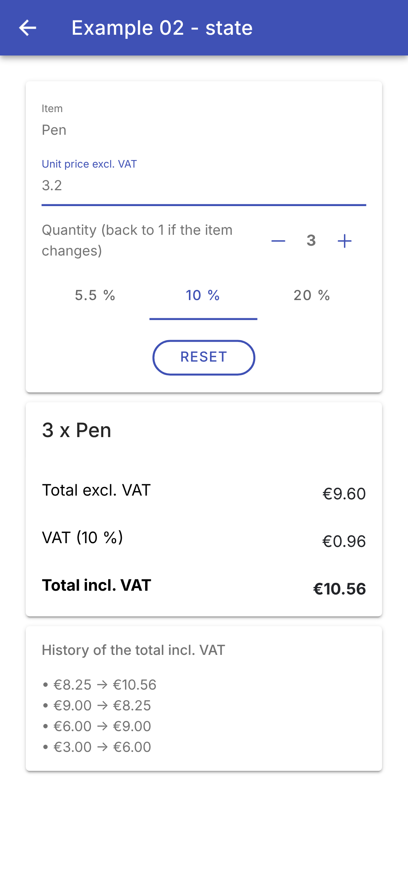
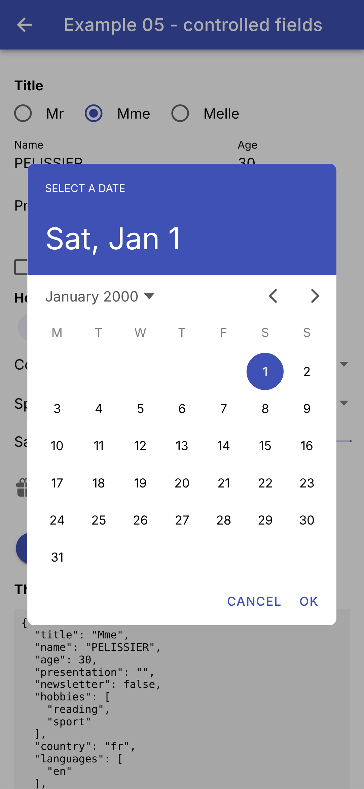
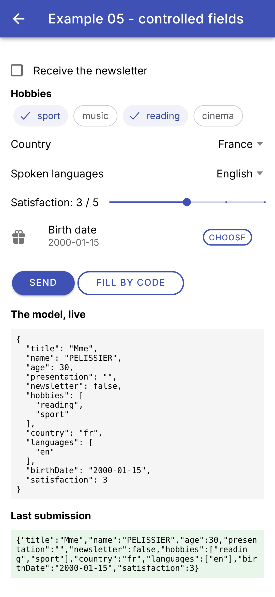
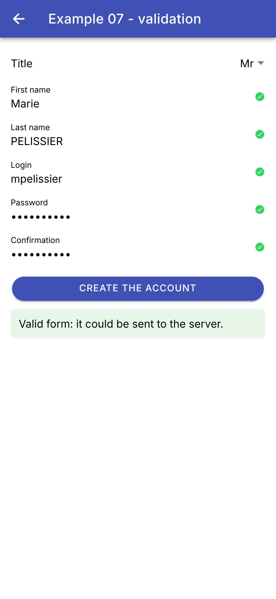
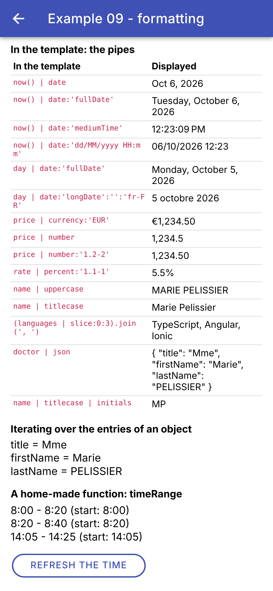

3. Ionic 入门
3.1. 示例 01：Ionic 应用的结构
3.1.1. 项目
使用 [Angular] 创建的 [Ionic] 应用， 最初是一个标准的 [Angular] 应用：它由 [Angular] 命令行工具 [ng] 创建，然后再向其中添加 [Ionic] 和 [Capacitor] 的组件；该工具会把它变成一个 [Android] 应用：
| npm install -g @angular/cli
ng new examples_ionic --style=scss --skip-tests --ssr=false
cd examples_ionic
npm install @ionic/angular ionicons @capacitor/core @capacitor/android @capacitor/preferences
npm install -D @capacitor/cli
npx cap init "Ionic Examples" fr.stahe.examples --web-dir dist/examples_ionic/browser
|
- 第 1 行：为整台电脑安装 [Angular CLI]，即 [ng] 命令（[-g]，“global”，即全局）；
- 第 2 行：构建 [examples_ionic] 项目：一个完整的、可直接运行的 [Angular] 应用。[--style=scss]：样式表将使用 [SCSS] 编写，这是增加了变量和嵌套的 CSS；[--skip-tests]：不生成单元测试文件；[--ssr=false]：不使用服务端渲染，这对移动应用没有必要；
- 第 4 行：[Ionic] 的包（其面向 [Angular] 的组件，以及其图标字体 [ionicons]）和 [Capacitor] 的包（其核心、[Android] 平台，以及设备上的键值存储，将从示例 20 开始使用）；
- 第 5 行：[Capacitor] 的命令行工具，即命令 [cap]，它仅用于开发（[-D]）；
- 第 6 行：写入文件 [capacitor.config.ts]：应用名称及其标识符（前缀 [fr.stahe]，像域名一样倒写，后跟应用名称；安装在同一部手机上的两个应用必须有不同的标识符），以及 [ng build] 存放编译后应用的文件夹。
示例项目就是这样创建的，然后手动填充其 [src/app] 文件夹，将二十五个示例合并为一个应用：一个主页（示例菜单）和每个示例一个页面。这样，它们共用相同的包，这些包只需下载一次。其目录结构如下：
| examples_ionic
├── angular.json the Angular project configuration
├── capacitor.config.ts the Capacitor configuration
├── package.json the packages and the scripts of the project
├── package-lock.json the exact versions of the installed packages
├── proxy.conf.json the relay to the JSON server (examples 22 to 25)
├── tsconfig.json the TypeScript configuration
├── tsconfig.app.json
├── captures/ the scripts that make the screenshots of the course
├── node_modules/ the installed packages (npm install)
├── public/ files delivered as is (icon, images, dictionaries)
├── android/ the Android Studio project (after npx cap add android)
└── src/
├── index.html the page that hosts the application
├── main.ts the entry point
├── styles.scss the styles of the whole application
└── app/
├── app.ts the root component
├── back-button.ts Android's Back button
├── app.routes.ts the routes: one address per example
├── examples.ts the list of the 25 examples
├── home/ the menu of the examples
│ ├── home.page.ts
│ └── home.page.html
├── common/ the code shared by examples 22 to 25
├── ex01-first-application/
│ ├── ex01.page.ts
│ └── ex01.page.html
├── ex02-state/
│ ├── ex02.page.ts
│ └── ex02.page.html
└── ...
|
每个示例都有自己的文件夹 [src/app/exNN-short-name]。一个页面由两个文件组成：一个 [TypeScript] 类（[exNN.page.ts]）及其 [HTML] 模板（[exNN.page.html]）。
3.1.2. package.json 文件
[package.json] 文件为 [npm]（即 [Node.js] 的包管理器）描述项目：它的名称、脚本以及所需的包。
| {
"name": "examples-ionic",
"version": "0.0.0",
"scripts": {
"ng": "ng",
"start": "ng serve",
"build": "ng build",
"watch": "ng build --watch --configuration development",
"android": "ng build && cap sync android && cap run android",
"captures": "node captures/captures.mjs"
},
"private": true,
"packageManager": "npm@10.9.4",
"dependencies": {
"@angular/common": "^22.2.0",
"@angular/compiler": "^22.2.0",
"@angular/core": "^22.2.0",
"@angular/forms": "^22.2.0",
"@angular/platform-browser": "^22.2.0",
"@angular/router": "^22.2.0",
"@capacitor/android": "^8.5.2",
"@capacitor/app": "^8.1.2",
"@capacitor/core": "^8.5.2",
"@capacitor/preferences": "^8.0.1",
"@ionic/angular": "^9.0.6",
"ionicons": "^8.1.0",
"rxjs": "~7.8.0",
"tslib": "^2.3.0"
},
"devDependencies": {
"@angular/build": "^22.2.1",
"@angular/cli": "^22.2.1",
"@angular/compiler-cli": "^22.2.0",
"@capacitor/cli": "^8.5.2",
"playwright": "^1.56.1",
"prettier": "^3.8.1",
"typescript": "~6.0.2"
}
}
|
- 第 2–3 行：项目名称和版本；
- 第 4–11 行：脚本，通过 [npm run name] （或对于脚本 [npm start] ，使用 [start]）启动：[npm start] 启动 [ng serve]，即开发服务器；[npm run build] 启动 [ng build]，它构建要部署的应用；[npm run android] 执行编译，将应用复制到 [Android] 项目，并在手机上启动它（见“运行”）；[npm run captures] 生成本课程的截图；
- 第 12 行：[private]：此项目不是库；它永远不会发布到 [npm] 仓库；
- 第 14–29 行：应用所需的包，它们将随应用一起打包。[@angular/...] 包是 [Angular] 框架的组成部分：[core] （组件、信号、依赖注入）、[common] （管道、HTTP 客户端）、[forms] （表单）、[router] （路由器）、[platform-browser] （浏览器渲染）、[compiler]（模板编译器）。接下来是 [Capacitor] 及其插件 [app] （[Android] 的返回按钮，见下文）和 [preferences] （设备的存储，见示例 20）、[@ionic/angular] （[Ionic] 的组件）、[ionicons] （其图标）、[rxjs] （异步数据流，见示例 19），以及 [tslib] （编译后代码使用的小函数）；
- 第 30–38 行：仅用于开发的包：[@angular/build] （应用编译器，基于 [esbuild] 和 [Vite]）、[@angular/cli] （[ng] 命令）、[@capacitor/cli] （[cap] 命令）、[typescript]、[prettier] （自动代码格式化）和 [playwright] （浏览器控制，用于截图）。
版本前缀 [^] （[^22.2.0]）接受同一主版本的任何更新版本（22.3.0，但不接受 23.0.0）；前缀 [~] （[~6.0.2]）只接受补丁版本（6.0.3，但不接受 6.1.0）。命令 [npm install] 将包下载到 [node_modules] 文件夹，并将所选的确切版本写入 [package-lock.json] 文件。要添加包，请输入 [npm install package-name]：该命令会安装它，并将其行添加到 [package.json] 中。
3.1.3. angular.json 文件
文件 [angular.json] 告诉 [Angular CLI] 如何编译和提供应用。第 14–36 行（未显示）配置由 [ng generate] 命令生成的文件（样式使用 [SCSS]，不生成测试）。其余部分：
| "root": "",
"sourceRoot": "src",
"prefix": "app",
"architect": {
"build": {
"builder": "@angular/build:application",
"options": {
"browser": "src/main.ts",
"tsConfig": "tsconfig.app.json",
"inlineStyleLanguage": "scss",
"assets": [
{
"glob": "**/*",
"input": "public"
}
],
"styles": [
"src/styles.scss"
]
},
"configurations": {
"production": {
"budgets": [
{
"type": "initial",
"maximumWarning": "2MB",
"maximumError": "5MB"
},
{
"type": "anyComponentStyle",
"maximumWarning": "8kB",
"maximumError": "16kB"
}
],
"outputHashing": "all"
},
"development": {
"optimization": false,
"extractLicenses": false,
"sourceMap": true
}
},
"defaultConfiguration": "production"
},
"serve": {
"builder": "@angular/build:dev-server",
"configurations": {
"production": {
"buildTarget": "examples_ionic:build:production"
},
"development": {
"buildTarget": "examples_ionic:build:development"
}
},
"defaultConfiguration": "development",
"options": {
"proxyConfig": "proxy.conf.json",
"port": 8100
}
}
|
- 第 38–40 行：项目位于文件夹的根目录；其源代码在 [src/] 中。[prefix]：组件标签的前缀（[app-root]、[app-ex01]……）；
- 第 42–43 行：编译（[ng build]），由构建器 [@angular/build:application] 处理；
- 第 45 行：应用的入口点 [src/main.ts]；
- 第 47 行：写在组件自身内部的样式使用 [SCSS]；
- 第 48–53 行：文件夹 [public/] 的内容会原样复制到编译后的应用中：图标 [favicon.ico]、示例 03 的图像 [ex03/doctor.svg] ，以及示例 21 和 25 的字典 [i18n/] ；
- 第 54–56 行：全局样式表 [src/styles.scss]；
- 第 59–73 行：配置 [production]，即发布应用所用的配置：代码会被优化（这是默认行为），如果应用变得过大，“预算”（budgets）会发出警告，并且编译后文件的名称包含其内容的哈希值（[outputHashing]），这样浏览器就不会缓存旧版本；
- 第 74–78 行：[development] 配置：不做优化，并使用“源映射”（source maps），使浏览器的开发者工具能够显示原始的 [TypeScript] 代码；
- 第 80 行：[ng build] 使用 [production] 配置；[ng build --configuration development] 使用 另一个配置；
- 第 82–97 行：开发服务器（[ng serve]），配置为 [development] （第 92 行），端口为 8100（第 95 行），并带有到 JSON 服务器的转发（第 94 行）。
3.1.4. proxy.conf.json 文件
| {
"/api": {
"target": "http://localhost:8080",
"secure": false,
"changeOrigin": false,
"logLevel": "warn"
}
}
|
此文件仅用于示例 22 至 25。[Angular] 开发服务器会将地址以 [/api] 开头的任何请求转发给 JSON 和 [RdvMedecins] 服务器（[http://localhost:8080]）。这样，对于浏览器、应用和 API 来说，源是相同的（[http://localhost:8100]）：没有 CORS 检查，会话 Cookie 也无需任何特殊配置即可被接受。这些示例将再次谈到这一点。
3.1.5. capacitor.config.ts 文件
| // =========================================================================
// capacitor.config.ts - Capacitor 配置
// -------------------------------------------------------------------------
// Capacitor 将 Web 应用（ng build 生成的文件夹）
// 变成 Android 应用：它把 Web 应用包装在一个 Android Studio 项目中
// （android/ 文件夹），并由“WebView”显示，WebView 即
// 手机上 Chrome 浏览器的引擎。命令（见示例 01，“运行”）：
// npx cap add android （只需一次：创建 android/ 文件夹）
// ng build （构建 Web 应用）
// npx cap sync android （将其复制到 Android 项目中）
// npx cap run android （在模拟器或手机上运行）
// =========================================================================
import type { CapacitorConfig } from '@capacitor/cli';
const config: CapacitorConfig = {
// 应用在手机（以及 Play Store）上的唯一标识符
appId: 'fr.stahe.examples',
// 显示在图标下方的名称
appName: 'Ionic Examples',
// 已编译 Web 应用所在的文件夹（ng build）
webDir: 'dist/examples_ionic/browser',
server: {
// 允许向开发用 JSON 服务器（示例 22 至 25）发送未加密的 HTTP 请求
// （http://10.0.2.2:8080）
cleartext: true,
},
plugins: {
// CapacitorHttp：应用的 HTTP 请求不再由 WebView 发出，
// 而是由 Android 的原生代码发出。后果（见
// 示例 22 和 23）：没有 CORS 检查（JSON 服务器无需
// 做任何放行配置），并且 Cookie（身份验证令牌所在的 Cookie）由
// Android 存储并自动回传
CapacitorHttp: {
enabled: true,
},
},
};
export default config;
|
- 第 18 行：应用在手机上的 ID，[fr.stahe.examples]；
- 第 20 行：应用的名称，显示在其图标下方；
- 第 22 行：已编译 Web 应用所在的文件夹，[Capacitor] 会将其复制到 [Android] 项目中；
- 第 23–27 行：默认情况下，[Android] 会拒绝未加密的 HTTP 请求；为了连接到 JSON 开发服务器（示例 22–25），这里允许这类请求；
- 第 28–37 行：HTTP 请求将由 [Android] 的原生代码发出，而不是由内置浏览器发出。示例 22 和 23 同样会解释原因。
这是与 [Flutter] 在架构上的主要区别：[Ionic] 应用是一个 **Web** 应用（HTML、CSS、JavaScript），由 [Capacitor] 封装成 [Android] 应用。这个应用只显示“WebView”——即手机上全屏模式的 [Chrome] 浏览器引擎——它加载随应用一起打包的 Web 应用。[Capacitor] 还通过插件让 JavaScript 代码能够访问手机的功能（存储、相机、通知等）。[Flutter] 则相反，它使用自己的引擎渲染屏幕上的每一个像素。
3.1.6. tsconfig.json 文件
| /* 要了解有关 TypeScript 配置文件的更多信息：https://www.typescriptlang.org/docs/handbook/tsconfig-json.html。 */
/* 要了解有关 Angular 编译器选项的更多信息：https://angular.dev/reference/configs/angular-compiler-options。 */
{
"compileOnSave": false,
"compilerOptions": {
"strict": true,
"noImplicitOverride": true,
"noPropertyAccessFromIndexSignature": true,
"noImplicitReturns": true,
"noFallthroughCasesInSwitch": true,
"skipLibCheck": true,
"isolatedModules": true,
"experimentalDecorators": true,
"importHelpers": true,
"target": "ES2022",
"module": "preserve"
},
"angularCompilerOptions": {
"enableI18nLegacyMessageIdFormat": false,
"strictInjectionParameters": true,
"strictInputAccessModifiers": true,
"strictTemplates": true
},
"files": [],
"references": [
{
"path": "./tsconfig.app.json"
}
]
}
|
[TypeScript] 编译器的设置。请注意以下几点：
- 第 6 行：[strict]：最严格的类型检查。类型为 [string] 的变量不能保存 [null]；参数必须有类型，等等；
- 第 8 行：“字典”对象（类型为 [{ [key: string]: value }]）的属性要用方括号访问：[errors['required']], not [errors.required] （见示例 08）；
- 第 9–10 行：函数在所有情况下都必须返回一个值；[switch] 中的 [case] 不得“贯穿”到下一个分支；
- 第 22 行：[strictTemplates]：[HTML] 模板会与 [TypeScript] 代码一样被严格检查：拼错的属性或类型错误的参数都是编译错误（见示例 06）。
3.1.7. src/index.html 页面
| <!doctype html>
<html lang="en">
<head>
<meta charset="utf-8">
<title>Ionic Examples</title>
<base href="/">
<!-- viewport-fit=cover: the application fills the whole phone screen, notch included;
user-scalable=no: no two-finger zoom, as in a native application -->
<meta name="viewport" content="viewport-fit=cover, width=device-width, initial-scale=1.0, minimum-scale=1.0, maximum-scale=1.0, user-scalable=no">
<meta name="color-scheme" content="light dark">
<link rel="icon" type="image/x-icon" href="favicon.ico">
</head>
<body>
<app-root></app-root>
</body>
</html>
|
Web 应用由这唯一的一个页面构成，浏览器（或手机的 WebView）在启动时加载它：
- 第 2 行：页面的语言，英语；
- 第 6 行：应用的基础 URL；页面的 URL（[/ex01]、[/ex02]……）将相对于根路径；
- 第 9 行：页面占满屏幕的整个宽度，不缩放——这是应用的行为，而不是网站的行为；
- 第 14 行：[app-root] 标签，为空：[Angular] 会在这里插入应用的根组件。
3.1.8. 入口点：src/main.ts
| // =========================================================================
// src/main.ts - 应用的入口点
// -------------------------------------------------------------------------
// Angular 应用从 bootstrapApplication 开始：Angular 创建
// 根组件（App），并将其插入 index.html 页面的 <app-root> 标签中。
// 第二个参数给出整个应用的“提供者”：
// Ionic、路由器、HTTP 客户端、语言。
// =========================================================================
import { registerLocaleData } from '@angular/common';
import { provideHttpClient } from '@angular/common/http';
import localeFr from '@angular/common/locales/fr';
import { LOCALE_ID } from '@angular/core';
import { bootstrapApplication } from '@angular/platform-browser';
import { provideRouter, withComponentInputBinding } from '@angular/router';
import { provideIonicAngular } from '@ionic/angular';
import { App } from './app/app';
import { routes } from './app/app.routes';
// Angular“管道”的法语格式化规则（日期、数字、金额），
// 用于示例 09 和 21 的第二种语言（en-US 是内置的）
registerLocaleData(localeFr);
bootstrapApplication(App, {
providers: [
// Ionic：'md' 模式（Material Design）= Android 的外观，即使在
// 电脑的浏览器中也是如此（否则 Ionic 在 iPhone 上会采用 iOS 外观）
provideIonicAngular({ mode: 'md' }),
// 路由器：路由列表（app.routes.ts）；
// withComponentInputBinding：路由的参数会传给
// 页面组件的输入（input）（见示例 17）
provideRouter(routes, withComponentInputBinding()),
// Angular 的 HTTP 客户端（示例 22 至 25）
provideHttpClient(),
// 应用的语言：（美式）英语
{ provide: LOCALE_ID, useValue: 'en-US' },
],
}).catch((err) => console.error(err));
|
- 第 22 行：日期和数字的法语格式化规则，供 [Angular] 的“管道”使用，在示例 09 和 21 中用作第二语言（[en-US] 是内置的）；
- 第 24 行：[bootstrapApplication] 启动 [Angular]：它创建根组件 [App]，并将其插入 [app-root] 标签中，该标签位于 [index.html] 里。第二个参数指定整个应用的“提供者”（[providers]）：即依赖注入（示例 14）将提供给请求它们的组件的服务；
- 第 28 行：[Ionic]，使用 [md] 模式（[Material Design]，即 [Android] 的外观）。如果没有这个设置，[Ionic] 在 iPhone 上会采用 [iOS] 的外观，在其他设备上则采用 [Material Design] 的外观；
- 第 32 行：[Angular] 的路由器及其路由（[app.routes.ts] 文件）。路由器为每个地址映射一个页面；
- 第 34 行：[Angular] 的 HTTP 客户端（示例 22 至 25）；
- 第 36 行：应用语言 [en-US]（美式英语），用于日期和数字的格式化。
关于此文件中**没有**的内容的说明：[zone.js]。直到 20 版本，[Angular] 应用都会加载这个库，它监视所有异步代码（事件、定时器、请求），以判断何时更新屏幕。从 21 版本开始，新的“无 zone”（zoneless）应用不再需要它：当模板所读取的**信号**发生变化时，以及在模板处理的每个事件（一次点按、一次按键）之后，[Angular] 都会更新屏幕。本课程中所有示例都是这样工作的，这也是它们的变化数据都是信号的原因。
3.1.9. 样式：src/styles.scss
| // =========================================================================
// src/styles.scss - 整个应用的样式
// -------------------------------------------------------------------------
// Ionic 的样式表：没有它们，Ionic 的组件就没有
// 应有的外观。core.css 是必需的；其余的是实用样式
// （外边距、对齐、ion-padding、ion-text-center 类……）。
// =========================================================================
@use '@ionic/angular/css/core.css';
@use '@ionic/angular/css/normalize.css';
@use '@ionic/angular/css/structure.css';
@use '@ionic/angular/css/typography.css';
@use '@ionic/angular/css/padding.css';
@use '@ionic/angular/css/float-elements.css';
@use '@ionic/angular/css/text-alignment.css';
@use '@ionic/angular/css/text-transformation.css';
@use '@ionic/angular/css/flex-utils.css';
@use '@ionic/angular/css/display.css';
// Ionic 的深色主题，通过设置在 <html> 标签上的
// ion-palette-dark CSS 类启用（见示例 20）
@use '@ionic/angular/css/palettes/dark.class.css';
// 应用的主色（按钮、顶部栏）：靛蓝色，
// 与 Flutter 示例中相同。Ionic 由 --ion-color-primary 派生出
// 较浅（tint）和较深（shade）的变体
:root {
--ion-color-primary: #3f51b5;
--ion-color-primary-rgb: 63, 81, 181;
--ion-color-primary-contrast: #ffffff;
--ion-color-primary-contrast-rgb: 255, 255, 255;
--ion-color-primary-shade: #37479f;
--ion-color-primary-tint: #5262bc;
}
|
- 第 9–18 行：[Ionic] 的样式表：[core.css] 是必需的；其余的提供实用类（[ion-padding]、[ion-text-center]、[ion-margin-top]……）；
- 第 22 行：深色主题，由 CSS 类启用（示例 20）；
- 第 27–34 行：应用的主色（[primary]），一种靛蓝色，与 [Flutter] 示例中一样。[Ionic] 的组件有一个属性 [color] （[color="primary"]、[color="danger"]、[color="success"]……），它从这个调色板中取色。
3.1.10. 根组件：src/app/app.ts
| // =========================================================================
// src/app/app.ts - 应用的根组件
// -------------------------------------------------------------------------
// 它只包含两个 Ionic 组件：
// - <ion-app>：每个 Ionic 应用的容器；
// - <ion-router-outlet>：路由器显示当前地址所对应页面的位置。
// 这是 Ionic 的（而不是 Angular 的 <router-outlet>），它为页面之间的切换
// 添加动画，并在内存中保留之前的页面：手机的返回按钮会回到它们，
// 而无需重新创建。
// 它的构造函数连接 Android 的返回按钮（见 back-button.ts）。
// =========================================================================
import { Component } from '@angular/core';
import { IonApp, IonRouterOutlet } from '@ionic/angular';
import { handleBackButton } from './back-button';
@Component({
selector: 'app-root',
imports: [IonApp, IonRouterOutlet],
template: `
<ion-app>
<ion-router-outlet />
</ion-app>
`,
})
export class App {
constructor() {
handleBackButton();
}
}
|
- 第 14 行：[Ionic] 的组件从 [@ionic/angular] 包中导入。每个组件都是一个 [TypeScript] 类：[IonApp] 对应 [<ion-app>] 标签，[IonRouterOutlet] 对应 [<ion-router-outlet>]，依此类推；
- 第 17–25 行：[Angular] 组件是一个类 由 [@Component] 装饰。装饰器提供其标签的名称（[selector]）、其模板所使用的组件（[imports]：组件只认识它导入的东西）以及它的模板，该模板直接写在装饰器中（[template]）；
- 第 21 行：[<ion-app>]，整个 [Ionic] 应用的容器；
- 第 22 行：[<ion-router-outlet>]，路由器显示当前地址所对应页面的位置。这是 [Ionic] 的，而不是 [<router-outlet>] 所属的 [Angular]：它负责页面之间的导航，就像 [Android] 那样，并在内存中保留之前的页面；
- 第 26–30 行：该类本身既没有自己的数据，也没有自己的行为。它的构造函数只在启动时执行一次，用来连接 [Android] 的返回按钮（第 28 行）。
[Android] 手机有一个返回按钮（或手势）。在 [Flutter] 应用中，它自动生效：关闭打开的窗口，返回上一个屏幕，并在第一个屏幕时退出应用。在 [Ionic] 应用中，[Capacitor] 会收到返回事件；如果找不到任何处理它的对象，它就只是沿着 WebView 的历史记录后退，并在历史记录为空时关闭应用。[Ionic] 不会收到此通知：打开的窗口不会关闭，而且你可以在菜单以外的页面退出应用。因此，必须使用 [@capacitor/app] 插件来连接它：
| // =========================================================================
// src/app/back-button.ts - Android 的返回按钮
// -------------------------------------------------------------------------
// 在手机上，Capacitor 会收到返回按钮的按下事件。如果它没有
// 针对该事件的监听器，就只是在 WebView 的历史记录中后退，
// 然后关闭应用：Ionic 对此一无所知
// （打开的对话框不会关闭，侧边菜单也不会关闭）。
// @capacitor/app 插件让我们可以订阅该事件：只要有了
// 监听器，Capacitor 就会把按键事件传给 Ionic，由 Ionic 调用
// 优先级最高的处理程序：
// - 100：打开的对话框（alert、ion-modal……）关闭；
// - 99：打开的侧边菜单关闭；
// - 1：（我们的处理程序）返回上一个屏幕；如果没有上一个屏幕，
// 就退出应用。
// 在浏览器中没有返回按钮：我们什么也不做。
// =========================================================================
import { inject } from '@angular/core';
import { NavController, Platform } from '@ionic/angular';
import { App as CapacitorApp } from '@capacitor/app';
import { Capacitor } from '@capacitor/core';
// 在根组件的构造函数中调用（注入上下文）
export function handleBackButton(): void {
if (!Capacitor.isNativePlatform()) return;
const navigation = inject(NavController);
// 一个（空的）监听器：Capacitor 现在会把按键事件传给 Ionic
void CapacitorApp.addListener('backButton', () => {});
inject(Platform).backButton.subscribeWithPriority(1, async () => {
// pop()：回到 Ionic 栈中的上一个屏幕；false：栈中
// 只有当前显示的屏幕，后面没有可返回的了
if (!(await navigation.pop())) {
await CapacitorApp.exitApp();
}
});
}
|
- 第 20 行：来自 [App] 插件的 [Capacitor] （由 [npm install @capacitor/app] 安装）。它的名称是 [App]，与根组件相同：为避免混淆，在导入时对它重命名（[as CapacitorApp]）；
- 第 24 行：一个普通函数，由根组件的构造函数调用。它使用 [inject]：它只能在 [Angular] 能够提供服务的地方调用（构造函数、属性初始化），即“注入上下文”；
- 第 25 行：在浏览器（[ng serve]）中没有返回按钮：不执行任何操作。[Capacitor.isNativePlatform()] 在 [Android] 应用中等于 [true] ；
- 第 26 行：[Ionic] 的 [NavController] 服务：它知道 [<ion-router-outlet>] 的页面栈；
- 第 28 行：[backButton] 事件的监听器，它什么也不做。只要它存在就足够了：一旦有了监听器，[Capacitor] 就不再自动在历史记录中后退，而是把处理权交给 [Ionic]；
- 第 29–35 行：[Ionic] 接过处理权，并且只调用一个、且仅一个处理程序：优先级最高的那个。窗口（[AlertController]、[ion-modal]、[ion-select] 中的列表……）的优先级为 100，而下拉菜单的优先级为 99：当其中某一个打开时，就关闭那一个。否则，由我们的处理程序优先（优先级 1）：[navigation.pop()] 返回上一页，如果没有上一页则返回 [false] ；此时应用退出（[exitApp()]）。
在此项目中，菜单是唯一的起始页面：返回按钮会把你从某个示例带回菜单，然后退出应用。
3.1.12. 路由：src/app/app.routes.ts
| // =========================================================================
// src/app/app.routes.ts - 示例应用的路由
// -------------------------------------------------------------------------
// 路由把一个地址（path）与一个页面（组件）关联起来。主页
// ('') 是示例菜单；每个示例都有自己的地址：
// /ex01、/ex02……示例的代码只在我们进入时才加载
// （loadComponent、loadChildren：“懒”加载，见示例 17）。
// =========================================================================
import { Routes } from '@angular/router';
export const routes: Routes = [
{ path: '', loadComponent: () => import('./home/home.page').then((m) => m.HomePage) },
{ path: 'ex01', loadComponent: () => import('./ex01-first-application/ex01.page').then((m) => m.Ex01Page) },
{ path: 'ex02', loadComponent: () => import('./ex02-state/ex02.page').then((m) => m.Ex02Page) },
{ path: 'ex03', loadComponent: () => import('./ex03-templates/ex03.page').then((m) => m.Ex03Page) },
{ path: 'ex04', loadComponent: () => import('./ex04-events/ex04.page').then((m) => m.Ex04Page) },
{ path: 'ex05', loadComponent: () => import('./ex05-controlled-fields/ex05.page').then((m) => m.Ex05Page) },
{ path: 'ex06', loadComponent: () => import('./ex06-reducer/ex06.page').then((m) => m.Ex06Page) },
{ path: 'ex07', loadComponent: () => import('./ex07-validation/ex07.page').then((m) => m.Ex07Page) },
{ path: 'ex08', loadComponent: () => import('./ex08-reactive-forms/ex08.page').then((m) => m.Ex08Page) },
{ path: 'ex09', loadComponent: () => import('./ex09-formatting/ex09.page').then((m) => m.Ex09Page) },
{ path: 'ex10', loadComponent: () => import('./ex10-component-inputs/ex10.page').then((m) => m.Ex10Page) },
{ path: 'ex11', loadComponent: () => import('./ex11-lifting-state-up/ex11.page').then((m) => m.Ex11Page) },
{ path: 'ex12', loadComponent: () => import('./ex12-composition/ex12.page').then((m) => m.Ex12Page) },
{ path: 'ex13', loadComponent: () => import('./ex13-lifecycle/ex13.page').then((m) => m.Ex13Page) },
{ path: 'ex14', loadComponent: () => import('./ex14-injection/ex14.page').then((m) => m.Ex14Page) },
{ path: 'ex15', loadComponent: () => import('./ex15-behaviours/ex15.page').then((m) => m.Ex15Page) },
{ path: 'ex16', loadComponent: () => import('./ex16-confirmation/ex16.page').then((m) => m.Ex16Page) },
// 示例 17 和 18 有自己的路由，是 /ex17 和 /ex18 的“子路由”
{ path: 'ex17', loadChildren: () => import('./ex17-router/routes').then((m) => m.routes) },
{ path: 'ex18', loadChildren: () => import('./ex18-guards/routes').then((m) => m.routes) },
{ path: 'ex19', loadComponent: () => import('./ex19-asynchronous/ex19.page').then((m) => m.Ex19Page) },
{ path: 'ex20', loadComponent: () => import('./ex20-shared-state/ex20.page').then((m) => m.Ex20Page) },
{ path: 'ex21', loadComponent: () => import('./ex21-i18n/ex21.page').then((m) => m.Ex21Page) },
{ path: 'ex22', loadComponent: () => import('./ex22-http/ex22.page').then((m) => m.Ex22Page) },
{ path: 'ex23', loadComponent: () => import('./ex23-login/ex23.page').then((m) => m.Ex23Page) },
{ path: 'ex24', loadComponent: () => import('./ex24-api-layer/ex24.page').then((m) => m.Ex24Page) },
{ path: 'ex25', loadComponent: () => import('./ex25-server-errors/ex25.page').then((m) => m.Ex25Page) },
// 任何其他地址都会回到菜单
{ path: '**', redirectTo: '' },
];
|
- 第 12 行：路由：一个 [Route] 对象的数组；
- 第 13 行：空 URL（[http://localhost:8100/]）显示主页 [HomePage]。[loadComponent] 包含一个导入组件文件的函数：只有当 你导航到该地址时，才会加载这个文件（懒加载；见示例 17）。因此，启动时应用只加载菜单；
- 第 14–29 行：一个路由，例如：[/ex01]、[/ex02]……；
- 第 31–32 行：示例 17 和 18 有各自的路由（示例 17）；
- 第 41 行：任何其他地址都会返回菜单。
3.1.13. 示例列表：src/app/examples.ts
| // =========================================================================
// src/app/examples.ts - 25 个示例的列表
// -------------------------------------------------------------------------
// 主页（示例菜单）的唯一数据源。每个
// 示例都有编号、标题和章节；它的地址（/ex01、/ex02……）
// 在 app.routes.ts 中声明。
// =========================================================================
export interface Example {
number: string; // '01'……'25'
title: string;
chapter: string;
}
export const EXAMPLES: Example[] = [
{ number: '01', title: 'a first application', chapter: 'First steps' },
{ number: '02', title: 'state and computed values', chapter: 'First steps' },
{ number: '03', title: 'writing a template', chapter: 'First steps' },
{ number: '04', title: 'events', chapter: 'First steps' },
{ number: '05', title: 'all the field types', chapter: 'First steps' },
{ number: '06', title: 'a form, an object, a reducer', chapter: 'First steps' },
{ number: '07', title: 'validating a form, by hand', chapter: 'First steps' },
{ number: '08', title: 'reactive forms', chapter: 'First steps' },
{ number: '09', title: 'formatting values', chapter: 'First steps' },
{ number: '10', title: 'components and their inputs', chapter: 'Components' },
{ number: '11', title: 'the child notifies its parent', chapter: 'Components' },
{ number: '12', title: 'composition', chapter: 'Components' },
{ number: '13', title: 'the lifecycle of a component', chapter: 'Components' },
{ number: '14', title: 'dependency injection', chapter: 'Components' },
{ number: '15', title: 'reusing behaviours', chapter: 'Components' },
{ number: '16', title: 'a reusable confirmation dialog', chapter: 'Components' },
{ number: '17', title: 'the router', chapter: 'Routing' },
{ number: '18', title: 'navigation guards', chapter: 'Routing' },
{ number: '19', title: 'promises, observables and timers', chapter: 'Asynchrony and shared state' },
{ number: '20', title: 'a shared state', chapter: 'Asynchrony and shared state' },
{ number: '21', title: 'an application in two languages', chapter: 'Internationalization' },
{ number: '22', title: 'a first HTTP request', chapter: 'Talking to the server' },
{ number: '23', title: 'login, cookie and session', chapter: 'Talking to the server' },
{ number: '24', title: 'an API access layer', chapter: 'Talking to the server' },
{ number: '25', title: 'the errors returned by the server', chapter: 'Talking to the server' },
];
|
- 第 9–13 行：一个 [TypeScript] 接口描述对象的结构：此处是一个编号、一个标题和一个章节——三个字符串；
- 第 15–41 行：25 个示例，一个 [Example] 对象的数组。关键字 [export] 使该常量对其他文件可见，其他文件通过 [import { EXAMPLES } from '../examples'] 导入它。
3.1.14. 主页
主页显示这张按章节分组的表格：
| // =========================================================================
// src/app/home/home.page.ts - 25 个示例的菜单
// -------------------------------------------------------------------------
// 应用的第一个页面：按章节分组的示例列表。
// 点按某个示例即可打开它的页面（/ex01、/ex02……）。
// =========================================================================
import { Component } from '@angular/core';
import { RouterLink } from '@angular/router';
import {
IonContent, IonHeader, IonItem, IonItemDivider, IonItemGroup, IonLabel, IonList, IonTitle, IonToolbar,
} from '@ionic/angular';
import { EXAMPLES, Example } from '../examples';
@Component({
selector: 'app-home',
imports: [RouterLink, IonHeader, IonToolbar, IonTitle, IonContent, IonList, IonItemGroup, IonItemDivider, IonItem, IonLabel],
templateUrl: './home.page.html',
})
export class HomePage {
// 按章节分组的示例：[{ chapter, examples: [...] }, ...]
readonly chapters: { chapter: string; examples: Example[] }[] = [];
constructor() {
for (const example of EXAMPLES) {
let group = this.chapters.find((c) => c.chapter === example.chapter);
if (!group) {
group = { chapter: example.chapter, examples: [] };
this.chapters.push(group);
}
group.examples.push(example);
}
}
}
|
- 第 15–19 行：组件、它的标签、它的子组件，以及它的模板，该模板现在存放在一个单独的文件中（[templateUrl]）；
- 第 22 行：类的一个字段，供模板读取：章节列表，每个章节带有它的示例；
- 第 24–33 行：构造函数将每个示例放入其所属章节的分组中，并在需要时创建该分组。
| <!-- 示例菜单 -->
<ion-header>
<ion-toolbar color="primary">
<ion-title>Ionic Examples</ion-title>
</ion-toolbar>
</ion-header>
<ion-content>
<ion-list>
@for (group of chapters; track group.chapter) {
<ion-item-group>
<ion-item-divider color="light">
<ion-label>{{ group.chapter }}</ion-label>
</ion-item-divider>
@for (example of group.examples; track example.number) {
<!-- routerLink: a tap on the item opens the page of the example;
detail: the small arrow on the right -->
<ion-item [routerLink]="'/ex' + example.number" detail>
<ion-label>Example {{ example.number }} - {{ example.title }}</ion-label>
</ion-item>
}
</ion-item-group>
}
</ion-list>
</ion-content>
|
- 第 2–6 行：顶部栏：[<ion-header>] 包含一个工具栏 [<ion-toolbar>]，采用应用的颜色（[color="primary"]）以及它的标题 [<ion-title>]；
- 第 8 行：[<ion-content>]：页面的主体，超出屏幕高度时可滚动；
- 第 9 行：[<ion-list>]：一个列表；
- 第 10 行：[@for] 为数组的每个元素重复其代码块（见示例 03）：每个章节一组；
- 第 12–14 行：分组标题，一条分隔线（[<ion-item-divider>]）；
- 第 18 行：一个列表行（[<ion-item>]），例如。[[routerLink]]：点按该行会带你进入示例的 URL；[detail]：右侧的小箭头。

3.1.15. 示例 01 的页面
一个示例就是一个页面——也就是一个路由到其地址的组件。示例 01 的页面：
| // =========================================================================
// src/app/ex01-first-application/ex01.page.ts - 第一个应用
// -------------------------------------------------------------------------
// Ionic 页面就是一个 Angular 组件：一个 TypeScript 类，用
// @Component 装饰，并与一个描述其显示内容的 HTML 模板相关联。
// 模板混合了普通的 HTML 标签、Ionic
// 组件（<ion-button>、<ion-card>……）以及用于显示类中数据的 {{ ... }}
// 表达式。
// 会变化的数据是信号：当信号的值
// 变化时，Angular 会更新屏幕上显示它的内容。
// =========================================================================
import { Component, signal } from '@angular/core';
import {
IonBackButton, IonButton, IonButtons, IonContent, IonHeader, IonText, IonTitle, IonToolbar,
} from '@ionic/angular';
// “普通”数据，位于组件之外：它们永远不会改变
const title = 'Welcome to Ionic';
const languages = ['TypeScript', 'Angular', 'Ionic'];
// “12:05:09”：当前时间，各部分为两位数
function currentTime(): string {
const d = new Date();
const twoDigits = (n: number) => n.toString().padStart(2, '0');
return `${twoDigits(d.getHours())}:${twoDigits(d.getMinutes())}:${twoDigits(d.getSeconds())}`;
}
@Component({
// 组件标签的名称（<app-ex01>）：由路由器自己插入，
// 我们从不手写它
selector: 'app-ex01',
// 模板所使用的 Ionic 组件：组件只认识
// 它导入的东西
imports: [IonHeader, IonToolbar, IonButtons, IonBackButton, IonTitle, IonContent, IonButton, IonText],
// 模板，位于单独的文件中
templateUrl: './ex01.page.html',
})
export class Ex01Page {
// 由模板读取的数据：类的简单字段
readonly title = title;
readonly languages = languages;
// 状态：信号。signal(0) 创建一个初始值为 0 的信号；
// 像函数一样调用它即可读取它的值：counter()
readonly counter = signal(0);
readonly time = signal(currentTime());
// 按钮所调用的方法
increment(): void {
// set：新值；update：根据旧值计算出的新值。
// 随后 Angular 会更新屏幕：
// 我们从不自己修改它
this.counter.update((n) => n + 1);
this.time.set(currentTime());
}
}
|
- 第 13 行：[Component] （组件装饰器）和 [signal] 来自 [Angular] 的核心；
- 第 14–16 行：模板所使用的 [Ionic] 组件；
- 第 19–20 行：两个普通数据值，声明在组件之外：它们永远不会改变。[const]：只被赋值一次的变量；
- 第 23–27 行：一个返回当前时间的普通函数，格式为“12:05:09”。它包含一个小的箭头函数 [twoDigits]。[
...${expression}...] 是字符串模板：每个表达式的值都会被插入其中；
- 第 29–38 行：装饰器 [@Component]：组件的标签（第 32 行，由路由器自己插入：我们从不手写它）、其模板所使用的 [Ionic] 组件（第 35 行），以及包含其模板的文件（第 37 行）；
- 第 39 行：组件的类。[export]：路由文件会导入它；
- 第 41–42 行：类的两个字段，由模板读取。[readonly]：它们不会被重新赋值；
- 第 46–47 行：组件的**状态**，即会变化的数据：两个**信号**。[signal(0)] 创建一个初始值为 0 的信号，其类型（[number]）由该值推断得出。读取信号的值，要像函数一样调用它：[counter()]；
- 第 50–56 行：按钮所调用的方法。它不与屏幕交互；它只改变状态。[update] 根据旧值计算新值（第 54 行），而 [set] 则直接给出新值（第 55 行）。随后 [Angular] 就知道读取了这些信号的那部分屏幕需要重绘，并重绘它们。
模板：
| <!-- ======================================================================
ex01.page.html - the template of the page of example 01
====================================================================== -->
<!-- ion-header：顶部栏，带有返回按钮和标题 -->
<ion-header>
<ion-toolbar color="primary">
<ion-buttons slot="start">
<!-- the Back button: it leads back to the menu of the examples (defaultHref)
if we arrived directly on this page -->
<ion-back-button defaultHref="/" />
</ion-buttons>
<ion-title>Example 01 - a first application</ion-title>
</ion-toolbar>
</ion-header>
<!-- ion-content: the body of the page, which scrolls if needed;
ion-padding: a margin all around -->
<ion-content class="ion-padding">
<h2>{{ title }}</h2>
<p>This screen is built by Ionic and Angular, from the Ex01Page component and its template.</p>
<!-- {{ expression }}：TypeScript 表达式的值，插入到文本中 -->
<p>It is written in {{ languages.join(', ') }} ({{ languages.length }} languages).</p>
<!-- (click)：按下按钮时要调用的方法（见示例 04） -->
<ion-button (click)="increment()">Click me</ion-button>
<p>
<!-- counter()：通过调用来读取信号 -->
<ion-text color="primary">
<strong>You clicked {{ counter() }} times (last click: {{ time() }}).</strong>
</ion-text>
</p>
</ion-content>
|
- 第 6–15 行：顶部栏。[<ion-buttons slot="start">] 把按钮放在栏的开头（左侧）：一个返回按钮 [<ion-back-button>]，它会带你回到上一页。如果没有上一页（你直接输入了地址 [/ex01]），[defaultHref] 会指定要前往的页面：菜单；
- 第 19 行：页面的主体，四周有边距（类 [ion-padding]）；
- 第 20 行：[{{ title }}]：“插值”——把表达式的值插入文本中。表达式在类的上下文中求值：[title] 是组件第 41 行的字段；
- 第 23 行：表达式可以调用方法：[languages.join(', ')], [languages.length]；
- 第 26 行：[(click)="increment()"]：当按钮被按下时，[Angular] 会执行引号中写的语句。调用要带括号：这条语句只在按下按钮时才执行（见示例 04）；
- 第 30–32 行：依赖于状态的文本。[counter()] 读取信号：当它变化时，这段文本也随之变化。[<ion-text color="primary">] 为其内容着色。
屏幕的组件树，由 [Angular DevTools] 扩展显示，该扩展属于 [Chrome] 开发者工具（[Angular] 选项卡），并补充了 HTML 元素：
| App (app-root)
└── ion-app
└── ion-router-outlet
└── Ex01Page (app-ex01)
├── ion-header
│ └── ion-toolbar
│ ├── ion-buttons
│ │ └── ion-back-button
│ └── ion-title
└── ion-content
├── h2 (the title)
├── p
├── p
├── ion-button
└── p
└── ion-text
└── strong (the counter)
|
与 [Flutter] 一样，我们编写的“实现”代码很少，“描述性”代码很多。但是，[Flutter] 是在 [Dart] 中使用嵌套的 widget 构造函数来描述屏幕，而 [Angular] 则将二者分开：[TypeScript] 类包含数据和行为，[HTML] 模板则描述屏幕。[Ionic] 的组件（[<ion-button>]、[<ion-toolbar>]……）是真正的 HTML 元素，即“Web 组件”（"Web Components"），由 [@ionic/core] 库创建：它们可在任何浏览器中运行，而 [@ionic/angular] 对它们进行封装 ，使 [Angular] 可以把它们当作自己的组件来处理。这就是为什么同样的 [Ionic] 也存在于 [React] 和 [Vue.js] 中。
3.1.16. 运行
在打开到 [examples_ionic] 文件夹的控制台中（包已通过 [npm install] 安装过一次）：
控制台显示：
| > examples-ionic@0.0.0 start
> ng serve
Initial chunk files | Names | Raw size
styles.css | styles | 56.90 kB |
main.js | main | 6.35 kB |
| Initial total | 63.25 kB
Lazy chunk files | Names | Raw size
chunk-QC4MGRJ7.js | home-page | 7.15 kB |
chunk-IMCNE3A4.js | ex01-page | 6.23 kB |
...
Application bundle generation complete. [6.046 seconds]
Watch mode enabled. Watching for file changes...
➜ Local: http://localhost:8100/
|
应用在几秒钟内编译完成：启动时加载一个 [main.js] 文件，每个页面还有一个小文件（“懒加载块”，lazy chunk），按需加载。在 [Chrome] 中打开 URL [http://localhost:8100] 。要以手机尺寸查看应用，请打开开发者工具（F12），然后打开设备模拟栏（Ctrl+Shift+M），并从列表中选择一款手机（例如 [Pixel 7]），或者指定尺寸（本教程中的截图为 412 x 892 像素）。左边是示例 01 的起始屏幕；右边是点按按钮两次之后：
可以尝试的两个实验：
- 编辑 [ex01.page.html] 第 21 行的文本并保存文件：控制台显示 [Component update sent to client(s)]，屏幕立即发生变化，计数器保持其值不变。这就是热重载：新的模板在当前运行的应用中替换了旧的模板。相反，对 [TypeScript] 代码（[ex01.page.ts]）的更改会重新加载整个页面（[Page reload sent to client(s)]）：计数器重置为 0，就像 [Flutter] 的“热重启”一样；
- 使用开发者工具探索应用：[Elements] 选项卡显示页面的 [<ion-...>] 标签，[Console] 选项卡显示所有错误，[Sources] 选项卡显示 [TypeScript] 代码（得益于“源映射”），你可以在其中设置断点。
现在转到 [Android]。首先，需要创建 [Android] 项目：
此命令会创建 [android/] 文件夹：一个完整的 [Android Studio] 项目，它只显示 WebView，并将 Web 应用加载到其中。很少需要修改它（图标、权限）。不过，对于较新版本的 [Android Studio]，需要做一个调整：它们的 JDK 是 [Java] 25，而 [Gradle] 的版本（8.14）是由 [Capacitor] 8 选定的，不支持 Java 25。此时构建会失败，并出现错误 [Unsupported class file major version 69]。只需将 [Gradle] 切换到 9.1，方法是修改 [android/gradle/wrapper/gradle-wrapper.properties] 文件中的一行：
| distributionUrl=https\://services.gradle.org/distributions/gradle-9.1.0-all.zip
|
（取代 [gradle-8.14.3-all.zip]）。第一次构建会下载这个版本的 [Gradle] （约 200 MB）。之后，每当应用发生更改时：
| npx ng build
npx cap sync android
npx cap run android
|
- 第 1 行：在 [dist/examples_ionic/browser] 文件夹中构建 Web 应用（[production] 配置）；
- 第 2 行：将其复制到 [Android] 项目中（使用 [capacitor.config.ts] 中的配置和 [Capacitor] 的插件）；
- 第 3 行：构建 [Android] 应用（使用 [Gradle] 工具），将其安装到正在运行的模拟器或已连接的手机上，并启动它。如果有多个设备可用，该命令会提示你选择一个设备。
在手机上，返回按钮会让你后退一个屏幕回到菜单，并在菜单中退出应用（见 [back-button.ts]）。
你也可以在 [Android Studio] 中打开该项目（[npx cap open android]），并使用其按钮 [Run] 启动应用。第一次构建需要一两分钟；之后的构建只需几秒钟。在手机上，屏幕与浏览器中的相同，由同一个引擎渲染——即 [Chrome] 的引擎。调试也使用同样的工具：在电脑的 [chrome://inspect] 地址中，[Chrome] 会列出模拟器上当前运行的应用的 WebView，并打开它们的开发者工具。
这个循环（编译、复制、构建）不支持 [ng serve] 的热重载。要在手机上启用它，可以让应用从电脑的开发服务器获取代码，而不是从其内嵌的副本获取：
| npx ng serve --host 0.0.0.0
npx cap run android --live-reload --host=192.168.1.20 --port=8100
|
- 第 1 行：开发服务器接受来自电脑以外的机器的连接（默认情况下，它只监听 [localhost]）；
- 第 2 行：[192.168.1.20] 是电脑在局域网中的地址（在 [ipconfig] 下，[Windows] 可以查到）。然后，安装好的应用会加载 [http://192.168.1.20:8100] ，并在每次更改时重新加载它。
请谨慎使用：手机必须与电脑连接（同一 Wi-Fi 网络，电脑防火墙开放 8100 端口），而且以这种方式安装的应用在没有开发服务器时将无法工作。工作结束后，请再次运行 [npx ng build]，然后运行 [npx cap sync android]，让应用重新嵌入自己的代码。在本课程中，我们在浏览器中开发，然后运行 [Android] 进行验证。
3.2. 示例 02：状态和计算值
状态是 [Angular] 的核心，[Flutter] 和 [React] 也是如此。本示例计算商品的含税价格：
| // =========================================================================
// src/app/ex02-state/ex02.page.ts - 状态和计算值
// -------------------------------------------------------------------------
// 一个小型价格计算器（含增值税）：
// - 状态：信号（signal()）。改变它们的值（set、update）
// 会更新屏幕上显示它们的内容；
// - 由状态计算得出的值不是状态：它是一个
// 计算信号（computed()），当它所读取的某个信号变化时重新计算。
// 它始终是最新的，无需同步任何东西；
// - 依赖于状态的连续取值的数据（总价的历史记录）
// 在状态变化的地方更新：即在 change() 方法中，
// 所有的更改都经由它进行；
// - 应用的标题（浏览器选项卡）不在
// 模板中：它是一个副作用（effect()），即 Angular 在
// 它读取的任一信号变化时重新运行的函数。
// =========================================================================
import { Component, computed, DestroyRef, effect, inject, signal } from '@angular/core';
import { Title } from '@angular/platform-browser';
import {
IonBackButton, IonButton, IonButtons, IonCard, IonCardContent, IonCardHeader, IonCardSubtitle, IonCardTitle,
IonContent, IonHeader, IonIcon, IonInput, IonItem, IonLabel, IonList, IonNote, IonSegment, IonSegmentButton,
IonTitle, IonToolbar, SegmentValue,
} from '@ionic/angular';
import { addIcons } from 'ionicons';
import { add, remove } from 'ionicons/icons';
// 欧元金额的格式化器，英语风格（€1,234.50），见示例 09
const euros = new Intl.NumberFormat('en-US', { style: 'currency', currency: 'EUR' });
// 初始值（重置按钮）
const LABEL = 'Pen';
const PRICE = '2.5';
@Component({
selector: 'app-ex02',
imports: [
IonHeader, IonToolbar, IonButtons, IonBackButton, IonTitle, IonContent, IonCard, IonCardHeader, IonCardTitle,
IonCardSubtitle, IonCardContent, IonInput, IonButton, IonIcon, IonSegment, IonSegmentButton, IonList, IonItem,
IonLabel, IonNote,
],
templateUrl: './ex02.page.html',
styles: `
.quantity { display: flex; align-items: center; margin: 12px 0 8px; }
.quantity span { flex: 1; }
.quantity strong { font-size: 1.1em; min-width: 1.5em; text-align: center; }
.bold { font-weight: bold; }
ion-note { font-size: 1rem; }
`,
})
export class Ex02Page {
// 状态：四个信号，类型由其初始值确定
// （价格以文本形式保存：即我们输入的内容，包括分隔符）
readonly label = signal(LABEL);
readonly priceText = signal(PRICE);
readonly quantity = signal(1);
readonly vatRate = signal(20); // 以 % 表示
// 含税总价最近 5 次变化的历史记录
readonly history = signal<string[]>([]);
// 计算值：computed() 会记住结果，并且只有在
// 所读取的信号发生变化时才重新计算
readonly priceExclVat = computed(() => Number(this.priceText().replace(',', '.')) || 0);
readonly totalExclVat = computed(() => this.quantity() * this.priceExclVat());
readonly vatAmount = computed(() => (this.totalExclVat() * this.vatRate()) / 100);
readonly totalInclVat = computed(() => this.totalExclVat() + this.vatAmount());
// 结果卡片的各行：数据，模板会遍历它
readonly lines = computed(() => [
{ label: 'Total excl. VAT', amount: euros.format(this.totalExclVat()), bold: false },
{
label: `VAT (${this.vatRate()} %)`,
amount: euros.format(this.vatAmount()),
bold: false,
},
{ label: 'Total incl. VAT', amount: euros.format(this.totalInclVat()), bold: true },
]);
constructor() {
// 模板使用的图标（<ion-icon name="add" />）
addIcons({ add, remove });
// Angular 的 Title 服务用于更改页面的标题（浏览器
// 选项卡）。每当 totalInclVat 变化时，effect() 都会重新运行该函数
const title = inject(Title);
effect(() => title.setTitle(`Incl. VAT: ${euros.format(this.totalInclVat())}`));
// 离开页面时（组件被销毁），我们恢复应用的标题
inject(DestroyRef).onDestroy(() => title.setTitle('Ionic Examples'));
}
// 状态的所有更改都经由这个方法：它记录更改前的
// 含税总价，应用更改，并在总价发生变化时
// 补充历史记录
change(apply: () => void): void {
const oldTotal = this.totalInclVat();
apply();
// 更改之后读取 computed 会立即重新计算它
const newTotal = this.totalInclVat();
if (newTotal !== oldTotal) {
const line = `${euros.format(oldTotal)} -> ${euros.format(newTotal)}`;
// 一个新数组（而不是 push）：信号会发现它的值发生了变化
this.history.update((h) => [line, ...h].slice(0, 5));
}
}
// 更换商品会把数量重置为 1：我们在知道状态
// 为何变化的地方做这件事
changeLabel(newValue: string): void {
this.change(() => {
this.label.set(newValue);
this.quantity.set(1);
});
}
changePrice(text: string): void {
this.change(() => this.priceText.set(text));
}
// delta：-1 或 +1
addQuantity(delta: number): void {
this.change(() => this.quantity.update((q) => q + delta));
}
// 分段的值的类型为 SegmentValue（string | number），如果没有选择任何按钮，则为
// undefined：Number() 把它转换为数字
changeRate(value: SegmentValue | undefined): void {
this.change(() => this.vatRate.set(Number(value)));
}
reset(): void {
this.change(() => {
this.label.set(LABEL);
this.priceText.set(PRICE);
this.quantity.set(1);
this.vatRate.set(20);
});
}
}
|
- 第 18 行：所使用的 [Angular] 函数：[signal]、[computed]、[effect]、[inject] 和 [DestroyRef]；
- 第 19 行：[Title] 服务，它提供对页面标题的访问；
- 第 25–26 行：图标。[Ionic] 只提供随应用一起声明的图标：它们从 [ionicons/icons] 导入（这里是 [add]，即“+”，和 [remove]，即“-”），并由 [addIcons] 注册（第 80 行）；之后模板通过名称引用它们（[<ion-icon name="add" />]）；
- 第 29 行：一个英语风格的金额格式化器（€1,234.50），在组件之外一次性创建，使用 JavaScript API [Intl]（见示例 09）；
- 第 43–49 行：此组件专用的样式。[Angular] 会对它们进行“封装”：此组件的 [.bold] 类只作用于它的模板，不会扩展到其他页面；
- 第 54–57 行：四个状态变量，四个信号。它们的类型由初始值推断得出：[signal('Pen')] 是字符串信号，[signal(1)] 是数值信号。[TypeScript] 只有一种数值类型——数字——即 [number]。价格以文本形式原样保留用户的输入：我们稍后会看到原因；
- 第 59 行：总价最近五次变化的历史记录。[signal<string[]>([])]：当初始值不足以确定类型时（空数组——什么类型的数组？），要把类型写在尖括号中；
- 第 63–66 行：四个由状态**计算**得出的值。它们不是状态；它们是计算信号（[computed(() => ...)]）。[Angular] 会跟踪该函数所读取的信号（这里是 [priceText], then [quantity] and [priceExclVat]……），只有当其中某个信号发生变化时才会再次调用该函数；否则，它返回缓存的结果。计算信号与其他信号一样读取（[totalInclVat()]），但不能写入。这与我们之前在 [Flutter] 和 [React] 中已经见过的规则相同：只有无法计算出来的内容才存储在状态中；其他一切都通过计算得到；
- 第 63 行：价格，由输入的文本推导而来。[Number('3.2')] 将文本转换为数字，如果文本不是数字，则返回 [NaN]（“不是数字”）：随后 [|| 0] 把 [NaN] （以及 0）替换为 0。通过把法语的逗号替换为句点，逗号也被接受；
- 第 68–76 行：结果表格的三行，采用数据格式：一个对象数组，模板将遍历它。税额标签取决于税率：它同样是一个计算值；
- 第 84–85 行：页面标题（浏览器选项卡）随总价变化。标题不属于页面模板：它是一个由 [effect()] 处理的副作用（**effect**）。与 [computed] 一样，[effect] 会跟踪其函数所读取的信号，并在其中任何一个发生变化时调用该函数。[Title] 服务通过 [inject(Title)] 获得，这是来自 [Angular] 的依赖注入（示例 14）；[inject] 只在组件构造期间调用；
- 第 87 行：当离开页面时，组件被销毁；[DestroyRef.onDestroy] 会登记一个在那一刻调用的函数，用来恢复应用的标题。effect 本身会自动停止；
- 第 93–103 行：总价的历史记录取决于总价的**连续**取值，而计算信号无法表达这一点。因此，我们让所有状态变化都经过 [change] 方法，它接收要进行的更改作为参数——一个没有参数也没有返回值的函数（类型为 [() => void]）：它记录更改前的总价，应用更改，读取更改后的总价（更改之后读取的计算信号会立即重新计算），并在总价发生变化时更新历史记录。这是进行该计算的自然位置：状态发生变化的地方；
- 第 101 行：[update] 接收旧数组并返回新数组：新的一行，后面跟着旧的各行（[...h] 将它们“展开”），其中只保留前五个。我们创建一个新数组，而不是通过 [push] 修改旧数组：信号通过比较旧值和新值来判断它是否发生了变化，而原地修改的数组，在信号看来仍然是同一个数组；
- 第 107–112 行：更换商品会把数量重置为 1。这是在处理字段更改的方法中完成的，我们在那里知道状态为何变化；
- 第 125–127 行：从单选按钮中选择的税率。它的值的类型是 [SegmentValue] （字符串或数字），如果没有选中任何按钮，则为 [undefined] ：[Number] 把它转换为数字；
- 第 129–136 行：连续进行的多次状态更改：[Angular] 只会在该方法结束之后更新一次屏幕。
模板：
| <!-- ======================================================================
ex02.page.html - the template of the price calculator (incl. VAT)
====================================================================== -->
<ion-header>
<ion-toolbar color="primary">
<ion-buttons slot="start">
<ion-back-button defaultHref="/" />
</ion-buttons>
<ion-title>Example 02 - state</ion-title>
</ion-toolbar>
</ion-header>
<ion-content class="ion-padding">
<ion-card>
<ion-card-content>
<!-- [value]: the field DISPLAYS the value of the signal;
(ionInput): called on each keystroke; $event.detail.value is the new text -->
<ion-input label="Item" labelPlacement="floating" [value]="label()"
(ionInput)="changeLabel($event.detail.value ?? '')" />
<!-- inputmode="decimal"：手机的数字键盘，带小数分隔符 -->
<ion-input label="Unit price excl. VAT" labelPlacement="floating" inputmode="decimal" [value]="priceText()"
(ionInput)="changePrice($event.detail.value ?? '')" />
<div class="quantity">
<span>Quantity (back to 1 if the item changes)</span>
<!-- [disabled]：只要条件为真，按钮就被禁用 -->
<ion-button fill="clear" [disabled]="quantity() <= 0" (click)="addQuantity(-1)">
<ion-icon slot="icon-only" name="remove" />
</ion-button>
<strong>{{ quantity() }}</strong>
<ion-button fill="clear" (click)="addQuantity(1)">
<ion-icon slot="icon-only" name="add" />
</ion-button>
</div>
<!-- 只有一个被选中的按钮：增值税税率 -->
<ion-segment [value]="vatRate()" (ionChange)="changeRate($event.detail.value)">
<ion-segment-button [value]="5.5"><ion-label>5.5 %</ion-label></ion-segment-button>
<ion-segment-button [value]="10"><ion-label>10 %</ion-label></ion-segment-button>
<ion-segment-button [value]="20"><ion-label>20 %</ion-label></ion-segment-button>
</ion-segment>
<div class="ion-text-center ion-margin-top">
<ion-button fill="outline" shape="round" (click)="reset()">Reset</ion-button>
</div>
</ion-card-content>
</ion-card>
<ion-card>
<ion-card-header>
<!-- {{ }}：通过调用来读取信号 -->
<ion-card-title>{{ quantity() }} x {{ label() }}</ion-card-title>
</ion-card-header>
<ion-list lines="none">
<!-- 计算数组 lines() 的每个元素对应一行（见示例 03） -->
@for (line of lines(); track line.label) {
<ion-item>
<ion-label [class.bold]="line.bold">{{ line.label }}</ion-label>
<ion-note slot="end" color="dark" [class.bold]="line.bold">{{ line.amount }}</ion-note>
</ion-item>
}
</ion-list>
</ion-card>
<ion-card>
<ion-card-header>
<ion-card-subtitle>History of the total incl. VAT</ion-card-subtitle>
</ion-card-header>
<ion-card-content>
@for (line of history(); track $index) {
<div>• {{ line }}</div>
}
</ion-card-content>
</ion-card>
</ion-content>
|
- 第 15 行：[<ion-card>]，卡片：一个圆角的、略微凸起的块；
- 第 19–20 行：一个输入字段 [<ion-input>]，其标签（[label]）“浮动”在文本上方（[labelPlacement="floating"]）。[[value]="label()"] 是属性绑定：组件的 [value] 属性接收表达式的值，并且每次表达式变化时都会再次接收。[(ionInput)] 是每次按键时触发的事件；[$event] 是事件对象，其属性 [detail.value] 包含新的文本（一个字符串、[null] 或 [undefined]：[?? ''] 把后两者替换为空字符串）。因此该字段是**受控的**：它显示当前状态，并在每次更改时通知用户；
- 第 22–23 行：价格。[inputmode="decimal"] 选择手机的键盘：带逗号的数字键盘。如果该字段绑定到价格（一个数字），输入“3,2”会得到 3.2，而 [[value]] 绑定会把它在字段中重写为“3.2”。绑定到输入的文本后，字段会保留用户输入的内容；
- 第 25–35 行：数量，带有两个按钮“–”和“+”。[fill="clear"]：无背景的按钮；[slot="icon-only"]：图标就是它的全部内容。[[disabled]] 在表达式为真时禁用按钮：数量不能低于 0；
- 第 38–42 行：增值税税率，三个“分段”按钮，其中只有一个被选中，[<ion-segment>]。它的值就是被选中按钮的值；[(ionChange)] 在选择另一个按钮时触发。[[value]="5.5"] 把按钮的值设置为数字 5.5；[value="5.5"] 不带方括号，则会把它设置为字符串“5.5”；
- 第 45 行：重置按钮，带轮廓（[fill="outline"]）且为圆角（[shape="round"]）；
- 第 53 行：[{{ quantity() }} x {{ label() }}]：两个信号，在文本中读取；
- 第 57–62 行：计算得出的表 [lines()] 的每个元素对应一个列表行（[@for]；见示例 03）。[<ion-note slot="end">] 把金额放在行尾；[[class.bold]] 在表达式为真时设置 CSS 类 [bold] ；
- 第 71–73 行：每个历史记录条目对应一行文本。
我们更改数量（按两次“+”）、税率（10%）和价格（3.2），然后更换商品：
 |  |
每当含税总价发生变化时，历史记录中就会增加一行。更换商品会把数量重置为 1（右侧）。同时，浏览器选项卡先显示“Incl. VAT: €10.56”，然后显示“Incl. VAT: €3.52”；返回菜单时，它又显示“Ionic Examples”。
[Angular] 的信号同时源自 [Flutter] 和 [React]。与 [Flutter] 一样，状态位于一个**对象**（组件）中，该对象只创建一次并被保留：状态就是它的字段，没有钩子，也没有调用规则。但是，[Flutter] 在调用 [setState] 时会重新执行整个 [build]，却不知道究竟什么发生了变化；而信号知道谁在读取它：[Angular] 只更新模板中依赖于被修改信号的那些部分。因此，无需调用 [setState]：写入信号（[set]、[update]）就足够了。[computed] 相当于 [Flutter] 的 getter（以及 [React] 的 [useMemo]），并额外具备存储值的功能；[effect] 相当于 [React] 的 [useEffect]，但无需维护依赖列表，因为 effect 会自己发现依赖。页面标题是 [Flutter] 更简单的一个例子：它的标题是一个 widget，即 [Title]，和屏幕的其余部分一样由 [build] 来描述；而网页的标题属于文档（[document.title]），位于组件模板之外，因此才需要 effect。
3.3. 示例 03：编写模板
[Flutter] 没有模板语言：屏幕是用 [Dart] 编写的。[Angular] 则有模板语言：在 HTML 的基础上增加了 [Angular] 专有的语法，用于绑定、条件和循环。本示例显示一个可以过滤的医生列表：
| // =========================================================================
// src/app/ex03-templates/ex03.page.ts - 编写模板
// -------------------------------------------------------------------------
// Angular 组件的模板是 HTML，并增加了 Angular 专有的语法
// （见 ex03.page.html）：
// - {{ expression }} ：插入文本中的值；
// - [property]="expression" ：绑定到表达式的元素属性
// （[class.x]、[style.x] 用于
// CSS 类或样式）；
// - @if / @else if / @else ：仅当条件为真时才存在
// 的块；
// - @for (x of list; track ...) ：列表中每个元素对应一个块；
// - @switch / @case ：根据某个值，多个块中的一个；
// - @let name = expression ：模板的局部变量。
// 模板表达式只能看到类的成员（public 或
// protected）：数据、信号、方法。
// =========================================================================
import { Component, computed, signal } from '@angular/core';
import {
IonAvatar, IonBackButton, IonButton, IonButtons, IonCard, IonCardContent, IonChip, IonContent, IonHeader, IonIcon,
IonItem, IonLabel, IonList, IonSearchbar, IonText, IonTitle, IonToggle, IonToolbar,
} from '@ionic/angular';
import { addIcons } from 'ionicons';
import { happy, heart, medkit } from 'ionicons/icons';
// 字符串的“联合类型”：专业的唯一可能取值
type Specialty = 'generalist' | 'pediatrician' | 'cardiologist';
// 医生的结构：一个接口（它只为编译器而存在）
interface Doctor {
readonly id: number;
readonly title: string;
readonly firstName: string;
readonly lastName: string;
readonly specialty: Specialty;
readonly available: boolean;
}
const doctors: readonly Doctor[] = [
{ id: 1, title: 'Mme', firstName: 'Marie', lastName: 'PELISSIER', specialty: 'generalist', available: true },
{ id: 2, title: 'Mr', firstName: 'Paul', lastName: 'TATOU', specialty: 'pediatrician', available: false },
{ id: 3, title: 'Melle', firstName: 'Sophie', lastName: 'DUPONT', specialty: 'cardiologist', available: true },
];
// “根据某个值在多个值中取一个”：一个
// Record<Specialty, string> 类型的对象。编译器会检查所有
// 专业都有其标签（遗漏一个就是错误）
const labels: Record<Specialty, string> = {
generalist: 'general practitioner',
pediatrician: 'pediatrician',
cardiologist: 'cardiologist',
};
@Component({
selector: 'app-ex03',
imports: [
IonHeader, IonToolbar, IonButtons, IonBackButton, IonTitle, IonContent, IonSearchbar, IonItem, IonToggle,
IonButton, IonCard, IonCardContent, IonText, IonList, IonAvatar, IonLabel, IonIcon, IonChip,
],
templateUrl: './ex03.page.html',
styles: `
.logo { width: 32px; height: 32px; margin-inline-start: 8px; }
.help { background: #e1f5fe; box-shadow: none; }
.unavailable { opacity: 0.5; }
.rank {
display: flex; align-items: center; justify-content: center;
height: 100%; border-radius: 50%; background: #e8eaf6;
}
.specialty { display: flex; align-items: center; gap: 6px; }
`,
})
export class Ex03Page {
// 数据，由模板读取
readonly doctors = doctors;
// 屏幕的状态
readonly filter = signal(''); // 搜索的文本
readonly onlyAvailable = signal(false);
readonly showHelp = signal(true);
// 显示的列表：一个计算值，当过滤条件或
// 开关变化时重新计算。filter 保留满足条件的元素
readonly displayed = computed(() => {
const text = this.filter().trim().toLowerCase();
return doctors.filter(
(m) =>
(!this.onlyAvailable() || m.available) &&
`${m.firstName} ${m.lastName} ${labels[m.specialty]}`.toLowerCase().includes(text),
);
});
constructor() {
addIcons({ happy, heart, medkit });
}
// 由模板调用的方法
label(s: Specialty): string {
return labels[s];
}
}
|
- 第 28 行：字符串的“联合”类型：专业只有三个可能的值。这相当于 [Dart] 中的枚举：[let s: Specialty = 'dentist'] 会导致编译错误；
- 第 31–38 行：一个接口描述医生的结构。它的字段是 [readonly]：医生永远不会改变。接口只为编译器而存在，编译器会验证每位医生都具有其所有字段，且类型正确；它不会出现在编译后的代码中；
- 第 40–44 行：医生，字面量对象。[readonly Doctor[]]：不能被修改的数组（不能添加或删除）；
- 第 49–53 行：“根据某个值在多个值中取一个”：一个以专业为键的对象。[Record<Specialty, string>] 是这样一种对象的类型：它为每一个专业都有一个类型为 [string] 的属性：遗漏一个，或者添加了一个而没有补全这个对象，都会导致编译错误，就像 [switch] 在 [Dart] 中一样；
- 第 62–71 行：组件的样式：[logo] （顶部栏中图像的大小）、[help] （帮助卡片的浅蓝色背景）、[unavailable] （半透明的医生）、[rank] （行周围的圆圈）；
- 第 75 行：提供给模板的医生。模板只能看到类的成员——看不到文件中的常量；
- 第 78–80 行：屏幕状态；
- 第 84–91 行：显示的列表：一个计算值，在过滤条件或开关变化时重新计算。[filter] 保留满足条件的数组元素；[includes] 判断一个字符串是否包含另一个字符串；
- 第 98–100 行：模板将调用的一个方法：某个专业的标签。
模板：
| <!-- ======================================================================
ex03.page.html - the list of doctors, filtered
====================================================================== -->
<ion-header>
<ion-toolbar color="primary">
<ion-buttons slot="start">
<ion-back-button defaultHref="/" />
<!-- 随应用一起提供的 SVG 图像（项目的 public/ 文件夹） -->
<img class="logo" src="ex03/doctor.svg" alt="" />
</ion-buttons>
<ion-title>Example 03 - templates</ion-title>
</ion-toolbar>
</ion-header>
<ion-content class="ion-padding">
<!-- ion-searchbar：搜索字段，带有放大镜 -->
<ion-searchbar placeholder="search..." [value]="filter()" (ionInput)="filter.set($event.detail.value ?? '')" />
<!-- 一个开关，带有标签 -->
<ion-item lines="none">
<ion-toggle [checked]="onlyAvailable()" (ionChange)="onlyAvailable.set($event.detail.checked)">
available only
</ion-toggle>
</ion-item>
<ion-button fill="clear" size="small" (click)="showHelp.set(!showHelp())">
{{ showHelp() ? "Hide help" : "Show help" }}
</ion-button>
<!-- @if：只有当 showHelp() 为真时，这张卡片才存在 -->
@if (showHelp()) {
<ion-card class="help">
<ion-card-content>Type a name or a specialty. Unavailable doctors are greyed out.</ion-card-content>
</ion-card>
}
<!-- 三个块中的一个：@if / @else if / @else -->
@if (doctors.length === 0) {
<p>No doctor.</p>
} @else if (displayed().length === 0) {
<p><ion-text color="danger">No doctor matches "{{ filter() }}".</ion-text></p>
} @else {
<ion-list>
<!-- one item per doctor; track: the IDENTITY of each item (see example 04);
$index: the rank of the item (0, 1, 2...) -->
@for (m of displayed(); track m.id; let i = $index) {
<!-- [class.unavailable]：如果表达式为真，就设置该 CSS 类 -->
<ion-item [class.unavailable]="!m.available">
<ion-avatar slot="start">
<div class="rank">{{ i + 1 }}</div>
</ion-avatar>
<ion-label>
<h2>{{ m.title }} {{ m.firstName }} {{ m.lastName }}</h2>
<p class="specialty">
<!-- @switch：根据专业，在多个图标中选一个 -->
@switch (m.specialty) {
@case ('pediatrician') { <ion-icon name="happy" style="color: orange" /> }
@case ('cardiologist') { <ion-icon name="heart" style="color: red" /> }
@default { <ion-icon name="medkit" style="color: teal" /> }
}
{{ label(m.specialty) }}
</p>
</ion-label>
<!-- [color]：由条件表达式计算得出的属性 -->
<ion-chip slot="end" [color]="m.available ? 'success' : 'medium'">
{{ m.available ? 'available' : 'unavailable' }}
</ion-chip>
</ion-item>
}
</ion-list>
}
<!-- @let: a template variable; [style.font-size.px]: a COMPUTED style,
the size of the text depends on the number of doctors displayed -->
@let count = displayed().length;
<p [style.font-size.px]="12 + count * 2">{{ count }} doctor(s) displayed - the size of this text depends on it.</p>
</ion-content>
|
- 第 10 行：一幅随应用一起提供的 SVG 图像：项目的 [public/ex03/doctor.svg] 文件，原样复制到编译后的应用中（见 [angular.json] 文件）。浏览器可以显示 SVG；一个简单的 [<img>] 标签就足够了；
- 第 18 行：[<ion-searchbar>]，一个搜索字段，带有放大镜、提示文本（[placeholder]）和一个用于清除的叉号。[filter.set(...)]：模板中的语句可以写入信号；
- 第 21–25 行：一个开关 [<ion-toggle>]，及其标签（标签的内容）。[(ionChange)] 在切换时发出；[$event.detail.checked] 是它的新值，要么是 [true] 要么是 [false]；
- 第 27–29 行：一个无背景的按钮，其文本取决于它的状态：插值中的条件表达式 [? :] ；
- 第 32–36 行：[@if (condition) { ... }]：只有当 [showHelp()] 为真时，帮助卡片才**存在**。不存在“隐藏的”卡片：当条件为假时，卡片会从页面中移除，条件再次为真时又会重新创建；
- 第 39–72 行：三个代码块中的一个，使用 [@if]、[@else if]和 [@else]；
- 第 42 行：[<ion-text color="danger">]：彩色文本，这里是红色；
- 第 47 行：[@for (m of displayed(); track m.id; let i = $index)] 为显示的每位医生重复其代码块。[track] 提供每个元素的标识符（其 [id]）：当列表变化时，[Angular] 据此判断哪些元素可以保留、移动或删除（见示例 04）。[$index] 是元素的序号（0、1、2……），[let i = $index] 把它重命名为 [i]；
- 第 49 行：[[class.unavailable]="!m.available"]：如果表达式为真，则对该元素应用 CSS 类 [unavailable] ，否则移除它：不可预约的医生会显示为灰色；
- 第 49–69 行：[<ion-item>] 是 [Ionic] 的列表项。它的位置（[slot]）决定其内容的放置：[slot="start"] 在开头（这里是一个带序号的圆盘，位于 [<ion-avatar>] 中），[slot="end"] 在末尾（一个圆点标记，[<ion-chip>]）。在两者之间，[<ion-label>] 包含标题（[<h2>]）和副标题（[<p>]），由 [Ionic] 负责格式化；
- 第 57–61 行：[@switch (value)] 根据某个值从多个代码块中选择一个：如果与该值相等，则选第一个代码块 [@case]；否则选代码块 [@default]。这里是专业的图标；
- 第 62 行：对类的某个方法的调用；
- 第 66 行：[[color]]：一个其值由条件表达式计算得出的属性；
- 第 76 行：[@let count = displayed().length;] 声明一个模板变量，可在模板的后面使用；这样就避免了把同一个表达式写两遍；
- 第 77 行：[[style.font-size.px]]：计算得出的样式。文本大小（以像素为单位）取决于所显示的医生数量。
总结一下在 [Angular] 模板中的写法及其在 [Dart] 中的等价写法：
Angular（模板） | Flutter（Dart） | 作用 |
{{ expression }} | Text('$x') | 插入文本中的值 |
[property]="expression" | 参数：expression | 绑定到表达式的属性 |
[class.x]="c", [style.x]="v" | style: c ? ... : ... | 计算得出的 CSS 类或样式 |
@if (c) { ... } | if (c) widget | 仅当条件为真时才存在的代码块 |
@if (c) { A } @else { B } | if (c) A else B | 二选一 |
c? a : b | c? a : b | 在表达式中二选一 |
@for (x of list; track x.id) { ... } | for (final x in list) widget | 列表中每个元素对应一个代码块 |
@switch (v) { @case (a) { ... } } | switch (v) { a => widget } | 根据某个值，多个代码块中的一个 |
@let n = expression; | final n = ...;（在 return 之前） | 局部变量 |
启动时，然后输入“gen”并隐藏帮助之后，再输入“xyz”：
[Angular] 的模板比 [React] 的 JSX 更接近 HTML（在 JSX 中，条件和循环用 JavaScript 编写，借助 [&&]、[? :] 和 [map]），也比 [Flutter] 的 widget 树（用 [Dart] 编写）更接近 HTML。代价是要多学一种语法；好处是模板对任何熟悉 HTML 的人都易读，并且由编译器验证（[strictTemplates]）：拼错的属性名或类型错误的表达式会在编译时被指出。
3.4. 示例 04：事件
在模板中，当元素触发事件时，[(event)="statement"] 会执行该语句。本示例管理一个任务列表：
| // =========================================================================
// src/app/ex04-events/ex04.page.ts - 响应用户的操作
// -------------------------------------------------------------------------
// 在模板中，当元素发出事件时，
// (event)="statement" 会执行该语句：
// - (click)="add()" ：点按按钮；
// - (click)="remove(t, 'x')" ：我们传递自己的参数；
// - (ionChange)="f($event)" ：$event 是事件对象，这里是一个
// CustomEvent，其 detail 携带数据
// （被勾选的复选框、文本……）；
// - (keyup.enter), (keyup.escape) ：键盘上的特定按键；
// - (dblclick), (contextmenu) ：浏览器的事件，适用于
// 任何元素；
// - ion-item-sliding ：滑动一行以删除它，
// 这是移动设备的典型手势。
// 要从代码中操作输入字段（让它获得焦点），我们
// 用模板变量（#field）指定它，并在
// 类中通过 viewChild() 获取它。
// =========================================================================
import { Component, signal, viewChild } from '@angular/core';
import {
CheckboxCustomEvent, IonBackButton, IonButton, IonButtons, IonCheckbox, IonContent, IonHeader, IonIcon, IonInput,
IonItem, IonItemOption, IonItemOptions, IonItemSliding, IonList, IonTitle, IonToolbar,
} from '@ionic/angular';
import { addIcons } from 'ionicons';
import { trash, trashOutline } from 'ionicons/icons';
interface Task {
readonly id: number;
readonly label: string;
readonly done: boolean;
}
// “3:30 PM”：当前时间，英语风格
function time(): string {
return new Date().toLocaleTimeString('en-US', { hour: '2-digit', minute: '2-digit' });
}
@Component({
selector: 'app-ex04',
imports: [
IonHeader, IonToolbar, IonButtons, IonBackButton, IonTitle, IonContent, IonInput, IonButton, IonList,
IonItemSliding, IonItem, IonCheckbox, IonIcon, IonItemOptions, IonItemOption,
],
templateUrl: './ex04.page.html',
styles: `
.input { display: flex; align-items: center; gap: 8px; }
.input ion-input { flex: 1; }
.done { text-decoration: line-through; color: gray; }
.area {
height: 80px; display: flex; align-items: center; justify-content: center;
margin-top: 12px; border-radius: 8px; background: #e7f5ff; user-select: none;
}
.log { font-size: 12px; }
`,
})
export class Ex04Page {
readonly tasks = signal<Task[]>([
{ id: 1, label: 'Install Ionic', done: true },
{ id: 2, label: 'Read the chapter on events', done: false },
]);
readonly log = signal<string[]>([]);
// 输入字段的文本
readonly input = signal('');
// 模板中的 <ion-input #field> 组件（用于让它获得焦点）
private readonly field = viewChild.required<IonInput>('field');
// 类中一个不显示的字段：普通字段，而不是信号
private nextId = 3;
constructor() {
addIcons({ trash, trashOutline });
}
private trace(message: string): void {
this.log.update((j) => [`${time()} ${message}`, ...j]);
}
// 由按钮以及键盘的 Enter 键（keyup.enter）调用
add(): void {
const label = this.input().trim();
if (!label) {
return;
}
// 一个新数组：旧数组加上新任务
this.tasks.update((ts) => [...ts, { id: this.nextId++, label, done: false }]);
this.trace(`added "${label}"`);
this.input.set('');
// 焦点回到字段：我们可以输入下一个任务
this.field().setFocus();
}
// $event 是一个 CheckboxCustomEvent：detail.checked 表示复选框是否被勾选
toggle(task: Task, event: CheckboxCustomEvent): void {
const done = event.detail.checked;
// 我们用一个修改后的副本替换该任务：{ ...task, done }
this.tasks.update((ts) => ts.map((t) => (t.id === task.id ? { ...t, done } : t)));
this.trace(`"${task.label}": ${done ? 'done' : 'to do'}`);
}
remove(task: Task, how: string): void {
this.tasks.update((ts) => ts.filter((t) => t.id !== task.id));
this.trace(`removed "${task.label}" (${how})`);
}
// 在区域中点按：MouseEvent 给出手指在页面中的位置；我们把它
// 转换为相对于被触摸区域（currentTarget）的位置
position(event: MouseEvent): void {
const area = (event.currentTarget as HTMLElement).getBoundingClientRect();
const x = Math.round(event.clientX - area.left);
const y = Math.round(event.clientY - area.top);
this.trace(`tap at (${x}, ${y})`);
}
// 长按通常会打开浏览器的上下文菜单：
// preventDefault() 可阻止它
longPress(event: Event): void {
event.preventDefault();
this.trace('long press');
}
// 双击事件
doubleTap(): void {
this.trace('double tap');
}
}
|
- 第 29–33 行：一个任务。它的字段是只读的：要勾选任务，需用修改后的副本替换它；
- 第 36–38 行：当前时间“3:30 PM”，由 [toLocaleTimeString] 按英语（美国）的习惯格式化；
- 第 59–63 行：状态：任务列表和事件日志；
- 第 65 行：输入字段中的文本；
- 第 67 行：要从代码中与输入字段交互（让它获得焦点），我们需要组件本身。模板通过模板变量 [#field] 引用它；[viewChild.required<IonInput>('field')] 获取它。这是一个信号：[this.field()] 就是组件 [IonInput]。[required]：它始终存在（它不在 [@if] 内部）；
- 第 69 行：类中一个不显示的字段——普通字段，而不是信号。修改它不会更新屏幕上的任何内容。这就是 [React] 所说的“引用”（[useRef]）；
- 第 75–77 行：在日志顶部增加一行；
- 第 80–91 行：添加任务，由按钮以及键盘上的 Enter 键触发。任务被添加到一个新数组的末尾（[[...ts, { id: this.nextId++, label, done: false }]]），字段被清空，并通过其方法 [setFocus()] 把焦点还给它：这样你就可以输入下一个任务；
- 第 94–99 行：勾选或取消勾选任务。收到的事件是 [CheckboxCustomEvent]：[detail.checked] 表示复选框是否被勾选。任务被替换为修改后的副本（[{ ...t, done }]：来自 [t] 的所有字段，加上带有新值的 [done]），放在一个新数组中（[map]）。与 [Flutter] 不同，在 Flutter 中 [setState] 会通知“有些东西变了”，而信号只有在其值是新对象时才能检测到变化：就地修改任务（[task.done = true]）是检测不到的；
- 第 101–104 行：删除，可以通过按钮，也可以通过滑动：[filter] 保留除该任务之外的所有任务；
- 第 108–113 行：在底部区域点按。事件是一个 [MouseEvent] （手指点按产生的事件与鼠标点击相同）：[clientX] 和 [clientY] 表示手指在窗口中的位置；这个位置是相对于被触摸的区域，即监听该事件的元素（[currentTarget]）而言的，该元素的位置由 [getBoundingClientRect()] 给出；
- 第 117–120 行：长按通常会打开浏览器的上下文菜单（[contextmenu] 事件）；[preventDefault()] 可以阻止这种情况发生。
模板：
| <!-- ======================================================================
ex04.page.html - a task list and its events
====================================================================== -->
<ion-header>
<ion-toolbar color="primary">
<ion-buttons slot="start">
<ion-back-button defaultHref="/" />
</ion-buttons>
<ion-title>Example 04 - events</ion-title>
</ion-toolbar>
</ion-header>
<ion-content class="ion-padding">
<div class="input">
<!-- #field: a template variable, which designates this component (see viewChild);
(keyup.enter): the Enter key; (keyup.escape): the Escape key;
enterkeyhint="done": the Enter key of the phone's keyboard -->
<ion-input #field placeholder="new task (Escape to clear)" enterkeyhint="done"
[value]="input()" (ionInput)="input.set($event.detail.value ?? '')"
(keyup.enter)="add()" (keyup.escape)="input.set('')" />
<ion-button shape="round" (click)="add()">Add</ion-button>
</div>
<ion-list>
<!-- track t.id：每一行的标识（见课程中的说明） -->
@for (t of tasks(); track t.id) {
<!-- ion-item-sliding：用手指滑动的一行 -->
<ion-item-sliding>
<ion-item>
<!-- 复选框在左侧（justify="start"），其标签在它的右侧 -->
<ion-checkbox justify="start" labelPlacement="end" [checked]="t.done" (ionChange)="toggle(t, $event)">
<span [class.done]="t.done">{{ t.label }}</span>
</ion-checkbox>
<!-- “垃圾桶”按钮：以这一行的任务作为参数 -->
<ion-button slot="end" fill="clear" color="danger" (click)="remove(t, 'button')">
<ion-icon slot="icon-only" name="trash-outline" />
</ion-button>
</ion-item>
<!-- what appears under the row when it is swiped to the left (side="end");
(ionSwipe): the row has been swiped all the way (option "expandable") -->
<ion-item-options side="end" (ionSwipe)="remove(t, 'swipe')">
<ion-item-option color="danger" expandable (click)="remove(t, 'swipe')">
<ion-icon slot="icon-only" name="trash" />
</ion-item-option>
</ion-item-options>
</ion-item-sliding>
}
</ion-list>
<!-- 一个简单的 <div> 方框，对三个浏览器事件敏感 -->
<div class="area" (click)="position($event)" (dblclick)="doubleTap()" (contextmenu)="longPress($event)">
Touch this area (tap, double tap, long press)
</div>
<h3>Log</h3>
@for (line of log(); track $index) {
<div class="log">{{ line }}</div>
}
</ion-content>
|
- 第 19–21 行：输入字段，名为 [#field]。它的文本绑定到信号 [input]。[(keyup.enter)] 只由 Enter 键触发，[(keyup.escape)] 由 Esc 键触发（在物理键盘上：电脑、模拟器、平板电脑）：这是 [Angular] 的一种“伪事件”，它替我们过滤键盘按键。[enterkeyhint="done"] 决定手机键盘上 Enter 键的外观；
- 第 22 行：按钮调用同一个方法；
- 第 27 行：[track t.id]：每一行的标识符。当列表变化时，[Angular] 会比较旧列表和新列表，以确定要保留哪些项：如果使用 [track $index]，它会按序号来匹配它们（第一个对第一个，第二个对第二个，依此类推）。如果第一个任务消失了，第二个任务的行就会取而代之……连同第一个任务的状态（例如它的滚动位置）。使用 [track t.id] 时，每一行都有稳定的标识：即它所属任务的标识。这就是 [Flutter] 中 key 的作用；
- 第 29–47 行：用手指拖动的一行 [<ion-item-sliding>]——这是手机上操作列表的典型手势。它包含行本身（[<ion-item>]）以及滑动该行时出现在其下方的内容（[<ion-item-options>]）；
- 第 32 行：一个复选框 [<ion-checkbox>]，位于左侧（[justify="start"]），后面是它的标签（[labelPlacement="end"]）。[(ionChange)="toggle(t, $event)"] 把这一行对应的任务和事件对象传给方法；
- 第 33 行：如果任务已完成，标签会被划掉并变灰（[done] 类）；
- 第 36–38 行：行尾的“垃圾桶”按钮：[(click)="remove(t, 'button')"] 向方法传递它自己的参数；
- 第 42–46 行：当你把行向左拖动时，出现在右侧（[side="end"]）的选项：一个带垃圾桶图标的红色按钮。[expandable]：如果你把行一直拖到尽头，该选项会扩展到整行，并且 [<ion-item-options>] 会触发事件 [(ionSwipe)]；
- 第 52 行：一个简单的方框 [<div>]，它响应三个浏览器事件：[(click)] （点按）、[(dblclick)] （双击）和 [(contextmenu)] （在触摸屏上长按）。任何元素都可以监听任何浏览器事件。
添加一个任务（按 Enter），勾选第二个任务，点按底部区域；然后把第一个任务向左拖动（拖动过程中到中间位置；一直拖到尽头后则到右侧）：
在 [Flutter] 中，每个可交互的 widget 使用带类型的参数声明其事件（[onPressed]、[onChanged]、[onSubmitted]……），而 [GestureDetector] 为没有手势的 widget 添加手势。在 [Angular] 中，我们看到的是浏览器模型：每个元素都会发出 DOM 事件（[click]、[keyup]、[dblclick]……），而 [Ionic] 的组件会添加它们自己的事件，以 [ion] 为前缀（[ionInput]、[ionChange]、[ionSwipe]……）。得益于 [strictTemplates]，[$event] 具有准确的事件类型（[CheckboxCustomEvent]、[MouseEvent]……），编辑器会在你输入时提示它的 [detail] 的属性。对于更复杂的手势（拖动、捏合），[Ionic] 提供了 [GestureController]。
3.5. 示例 05：所有字段类型
本示例使用 [Flutter] 课程示例 05 中的表单，并配以 [Ionic] 的输入字段：文本框、单选按钮、复选框、圆点标记列表、下拉列表、滑块和日历。
| // =========================================================================
// src/app/ex05-controlled-fields/ex05.page.ts - 所有字段类型
// -------------------------------------------------------------------------
// 受控字段显示状态中的值，并把每次更改通知组件，
// 由组件更新状态：状态是唯一的数据来源。
// 修改状态（通过代码）会修改字段。
// 编写绑定到信号的字段有两种方式：
// - [value]="name()" (ionChange)="name.set($event.detail.value)"：手动方式；
// - [(ngModel)]="name"：FormsModule 的“双向绑定”，它
// 直接接受可写信号（WritableSignal），并且
// 一次完成两件事：读取信号，并在每次更改时写入它。
// 字段的事件所携带的内容（$event.detail）取决于字段：
// - ion-input, ion-textarea -> value：文本（string | null）；
// - ion-checkbox, ion-toggle -> checked：boolean；
// - ion-radio-group, ion-select -> value：所选选项的值；
// - ion-select multiple -> value：所选值的数组；
// - ion-range -> value：一个数字；
// - ion-datetime -> value：日期，一个 ISO 8601 字符串。
// 与 Flutter 课程的示例 05 是同一个表单；一切都在
// 手机上完成，无需服务器。
// =========================================================================
import { JsonPipe } from '@angular/common';
import { Component, computed, signal } from '@angular/core';
import { FormsModule } from '@angular/forms';
import {
IonBackButton, IonButton, IonButtons, IonCheckbox, IonChip, IonCol, IonContent, IonDatetime, IonGrid, IonHeader,
IonIcon, IonInput, IonItem, IonLabel, IonModal, IonRadio, IonRadioGroup, IonRange, IonRow, IonSelect,
IonSelectOption, IonTextarea, IonTitle, IonToolbar, RangeChangeEventDetail,
} from '@ionic/angular';
import { addIcons } from 'ionicons';
import { checkmark, gift } from 'ionicons/icons';
const titles = ['Mr', 'Mme', 'Melle'];
const hobbies = ['sport', 'music', 'reading', 'cinema'];
// （代码, 名称）对的列表：代码是值，名称是显示的内容
const countries = [
{ code: 'fr', name: 'France' },
{ code: 'be', name: 'Belgium' },
{ code: 'ch', name: 'Switzerland' },
];
const languages = [
{ code: 'fr', name: 'French' },
{ code: 'en', name: 'English' },
{ code: 'es', name: 'Spanish' },
];
@Component({
selector: 'app-ex05',
imports: [
FormsModule, JsonPipe, IonHeader, IonToolbar, IonButtons, IonBackButton, IonTitle, IonContent, IonLabel,
IonRadioGroup, IonRadio, IonGrid, IonRow, IonCol, IonInput, IonTextarea, IonItem, IonCheckbox, IonChip, IonIcon,
IonSelect, IonSelectOption, IonRange, IonButton, IonModal, IonDatetime,
],
templateUrl: './ex05.page.html',
styles: `
h3 { font-size: 0.95em; font-weight: bold; margin: 16px 0 4px; }
.titles { display: flex; gap: 24px; padding: 8px 0; }
pre { background: #f5f5f5; padding: 8px; font-size: 12px; white-space: pre-wrap; word-break: break-all; }
pre.sent { background: #e8f5e9; }
/* 日历对话框：其大小取决于内容，而不是整个屏幕 */
ion-modal.calendar { --width: fit-content; --height: fit-content; --border-radius: 8px; }
`,
})
export class Ex05Page {
// 选项列表，由模板读取
readonly titles = titles;
readonly hobbies = hobbies;
readonly countries = countries;
readonly languages = languages;
// 可选择的最晚日期：今天（“2026-10-06”），按设备所在的时区计算
readonly today = new Date(Date.now() - new Date().getTimezoneOffset() * 60_000).toISOString().slice(0, 10);
// 表单的每个字段一个信号
readonly title = signal('Mme');
readonly name = signal('');
readonly age = signal<number | null>(30);
readonly presentation = signal('');
readonly newsletter = signal(false);
readonly chosenHobbies = signal<ReadonlySet<string>>(new Set(['reading'])); // 一个集合：没有重复项
readonly chosenCountry = signal('fr');
readonly chosenLanguages = signal<string[]>([]);
readonly birthDate = signal<string | null>(null); // null：尚未选择
readonly satisfaction = signal(3);
readonly sent = signal<string | null>(null);
// 输入过程中的自我介绍文本：一个简单字段，
// 不是信号。修改它不会更新任何内容
private presentationDraft = '';
// 所有的值，汇集到一个对象中（即我们会发送给服务器的内容）
readonly model = computed(() => ({
title: this.title(),
name: this.name().trim(),
age: this.age(),
presentation: this.presentation(),
newsletter: this.newsletter(),
hobbies: [...this.chosenHobbies()],
country: this.chosenCountry(),
languages: this.chosenLanguages(),
birthDate: this.birthDate(),
satisfaction: this.satisfaction(),
}));
constructor() {
addIcons({ checkmark, gift });
}
// 自我介绍：我们在每次按键时记录文本，而不触及
// 状态；只有在离开字段时（ionBlur）才把它复制到状态中
notePresentation(text: string | null | undefined): void {
this.presentationDraft = text ?? '';
}
commitPresentation(): void {
this.presentation.set(this.presentationDraft);
}
// 一个被选中或未被选中的标记：我们构建一个新的集合，包含或不包含该值
toggleHobby(hobby: string): void {
this.chosenHobbies.update((old) => {
const newSet = new Set(old);
if (newSet.has(hobby)) {
newSet.delete(hobby);
} else {
newSet.add(hobby);
}
return newSet;
});
}
// ion-range 的值是一个数字，对于带两个滑块的
// 滑块（dualKnobs）则是一个区间 { lower, upper }：这里是一个数字
changeSatisfaction(value: RangeChangeEventDetail['value']): void {
this.satisfaction.set(value as number);
}
// ion-datetime 给出 ISO 8601 日期（“2000-01-15T00:00:00”）：我们只
// 保留日期，采用 RdvMedecins API 的日期格式
chooseBirthDate(value: string | string[] | null | undefined): void {
if (typeof value === 'string') {
this.birthDate.set(value.substring(0, 10));
}
}
// 通过代码修改的状态：各字段随之变化
example(): void {
this.title.set('Mr');
this.name.set('MARTIN');
this.age.set(42);
this.chosenHobbies.set(new Set(['sport', 'cinema']));
this.chosenCountry.set('be');
}
send(): void {
// JSON.stringify(object)：单行的 JSON
this.sent.set(JSON.stringify(this.model()));
}
}
|
**受控**字段显示来自状态的值，并把任何更改通知组件，由组件更新状态：状态是唯一的数据来源。到目前为止，这都是手动编写的：[[value]="name()"] 用于显示值，[(ionInput)="name.set($event.detail.value ?? '')"] 用于更新它。[Angular] 的 [FormsModule] 模块一次完成这两件事：[[(ngModel)]="name"]，即“双向”连接（“香蕉盒”语法 [[( )]]，由 [[ ]] 和 [( )] 组合而成），它可以直接接受一个可修改的信号。
- 第 25 行：[FormsModule] 模块，它提供 [ngModel] （第 51 行：它被导入到组件中）；
- 第 34–46 行：下拉列表。国家和语言是（代码, 名称）对的数组：代码是字段的值，名称是显示的内容；
- 第 72 行：日历中可选择的最晚日期：今天，格式为“2026-10-06”。[toISOString()] 返回协调世界时（UTC）的日期：在巴黎的午夜到凌晨 2 点之间，它仍然是前一天。因此，首先要把当前时间偏移本地时间与协调世界时之间的差值（[getTimezoneOffset()]，以分钟为单位）；示例 24 将说明这个陷阱；
- 第 75–85 行：每个字段一个信号。[signal<number | null>(30)]：一个数字，或者在年龄字段为空时为 [null] ；[ReadonlySet<string>]：爱好的集合（无重复）；[signal<string | null>(null)]：一个日期，在选择日期之前为 [null] ；
- 第 89 行：输入过程中的自我介绍文本，一个普通字段：我们稍后再回到这一点；
- 第 92–103 行：所有值合并成一个对象（即将发送到服务器的内容）：一个始终保持最新的计算值。[[...this.chosenHobbies()]] 创建一个由集合元素组成的数组；
- 第 111–117 行：自我介绍：每次按键都会把文本放入普通字段；这不会影响状态：什么都不会更新。只有在离开该字段时，文本才会被复制到 [presentation] 信号中；
- 第 120–130 行：可选的爱好圆点标记：创建一个新的集合，即上一个集合的副本（[new Set(old)]），包含或不包含该爱好；
- 第 134–136 行：[<ion-range>] 的值是一个数字，对于双滑块则是一个 [{ lower, upper }] 范围：这里是一个数字，通过 [as number] 告知编译器；
- 第 140–144 行：日历提供 ISO 8601 格式的日期（“2000-01-15T00:00:00”，如果选择了多个日期则为日期数组）：只保留日期部分，采用 [RdvMedecins] 的 API 的日期格式；
- 第 147–153 行：由代码修改的记录；接下来是各字段；
- 第 157 行：[JSON.stringify] 将对象生成为 JSON，放在一行中。
模板中的字段：
| <!-- ======================================================================
ex05.page.html - a form, with all the field types
====================================================================== -->
<ion-header>
<ion-toolbar color="primary">
<ion-buttons slot="start">
<ion-back-button defaultHref="/" />
</ion-buttons>
<ion-title>Example 05 - controlled fields</ion-title>
</ion-toolbar>
</ion-header>
<ion-content class="ion-padding">
<h3>Title</h3>
<!-- radio buttons: the group carries the chosen value ([value]) and notifies
when another one is chosen (ionChange) -->
<ion-radio-group [value]="title()" (ionChange)="title.set($event.detail.value)">
<div class="titles">
@for (t of titles; track t) {
<ion-radio [value]="t" labelPlacement="end">{{ t }}</ion-radio>
}
</div>
</ion-radio-group>
<!-- 两个字段并排：12 列的网格，姓名占 8 列，年龄占 4 列 -->
<ion-grid class="ion-no-padding">
<ion-row>
<ion-col size="8">
<!-- [(ngModel)]="name"：字段读取并写入 name 信号 -->
<ion-input label="Name" labelPlacement="floating" [(ngModel)]="name" />
</ion-col>
<ion-col size="4">
<!-- type="number"：数字键盘；ngModel 接收一个数字（或 null） -->
<ion-input label="Age" labelPlacement="floating" type="number" [(ngModel)]="age" />
</ion-col>
</ion-row>
</ion-grid>
<!-- a field NOT bound to the state on each keystroke: its text is only copied
into the state when leaving the field (ionBlur) -->
<ion-textarea label="Presentation (updated when leaving the field)" labelPlacement="floating" [rows]="2"
(ionInput)="notePresentation($event.detail.value)" (ionBlur)="commitPresentation()" />
<!-- 一个单独的复选框：true / false -->
<ion-checkbox justify="start" labelPlacement="end" class="ion-margin-vertical" [(ngModel)]="newsletter">
Receive the newsletter
</ion-checkbox>
<h3>Hobbies</h3>
<!-- 对一个集合的多个标记：点按即可添加或移除该值 -->
@for (l of hobbies; track l) {
@let chosen = chosenHobbies().has(l);
<ion-chip [outline]="!chosen" [color]="chosen ? 'primary' : 'medium'" (click)="toggleHobby(l)">
@if (chosen) {
<ion-icon name="checkmark" />
}
<ion-label>{{ l }}</ion-label>
</ion-chip>
}
<!-- 下拉列表；interface="popover"：字段下方的小列表 -->
<ion-select label="Country" interface="popover" [(ngModel)]="chosenCountry">
@for (p of countries; track p.code) {
<ion-select-option [value]="p.code">{{ p.name }}</ion-select-option>
}
</ion-select>
<!-- 多选列表：其值是一个数组 -->
<ion-select label="Spoken languages" placeholder="none" [multiple]="true" cancelText="Cancel"
[(ngModel)]="chosenLanguages">
@for (l of languages; track l.code) {
<ion-select-option [value]="l.code">{{ l.name }}</ion-select-option>
}
</ion-select>
<!-- 滑块：5 个步长，从 1 到 5；(ionInput)：在移动过程中 -->
<ion-range [label]="'Satisfaction: ' + satisfaction() + ' / 5'" [min]="1" [max]="5" [step]="1" [snaps]="true"
[ticks]="true" [value]="satisfaction()" (ionInput)="changeSatisfaction($event.detail.value)" />
<!-- 出生日期：按钮会打开一个包含日历的对话框（ion-modal） -->
<ion-item lines="none" class="ion-no-padding">
<ion-icon slot="start" name="gift" />
<ion-label>
Birth date
<p>{{ birthDate() ?? 'not chosen' }}</p>
</ion-label>
<ion-button id="choose-birth-date" slot="end" fill="outline" shape="round">Choose</ion-button>
</ion-item>
<!-- trigger：打开对话框的按钮的 id -->
<ion-modal trigger="choose-birth-date" class="calendar">
<ng-template>
<!-- showDefaultButtons：Cancel 和 OK 按钮；只有按下 OK 时才会发出 ionChange -->
<ion-datetime presentation="date" locale="en-US" [firstDayOfWeek]="1" [showDefaultButtons]="true"
cancelText="Cancel" doneText="OK" [max]="today" [value]="birthDate() ?? '2000-01-01'"
(ionChange)="chooseBirthDate($event.detail.value)">
<span slot="title">Select a date</span>
</ion-datetime>
</ng-template>
</ion-modal>
<div class="ion-margin-vertical">
<ion-button shape="round" (click)="send()">Send</ion-button>
<ion-button shape="round" fill="outline" (click)="example()">Fill by code</ion-button>
</div>
<h3>The model, live</h3>
<!-- json 管道：以带缩进的 JSON 显示对象 -->
<pre>{{ model() | json }}</pre>
<!-- 只有在提交之后才存在的块 -->
@if (sent(); as submission) {
<h3>Last submission</h3>
<pre class="sent">{{ submission }}</pre>
}
</ion-content>
|
- 第 18–24 行：单选按钮。组 [<ion-radio-group>]保存选中的值（[[value]]），并在选择了另一个按钮时触发通知（[(ionChange)]）；它包含按钮 [<ion-radio>]，每个按钮都有自己的值；
- 第 27–38 行：网格中并排的两个字段：[<ion-grid>] 包含若干行（[<ion-row>]），每行分为十二列；[<ion-col size="8">] 占八列：姓名所占的空间是年龄的两倍；
- 第 31 行：[[(ngModel)]="name"]：该字段显示信号 [name] ，并在每次按键时写入它；
- 第 35 行：数字字段（[type="number"]）：手机的键盘是数字键盘，并且 [ngModel] 接收一个数字（如果字段为空，则为 [null] ）；
- 第 42–43 行：多行文本字段 [<ion-textarea>]，它不会在每次按键时绑定到状态：[(ionInput)] 把文本存入普通字段，而 [(ionBlur)] 在字段失去焦点时触发，并把文本复制回状态。底部显示的模板只有在离开该字段时才更新；
- 第 46–48 行：一个单独的复选框，[true] 或 [false]，通过 [ngModel] 绑定到信号 [newsletter] ；
- 第 52–60 行：对一个集合的多个选项：圆点标记 [<ion-chip>]。对于每个爱好，[@let chosen] 表示它是否在集合中；此时圆点标记会被填充（否则只有轮廓：[[outline]]）、着色，并且前面有一个对勾。点按可添加或移除该爱好；
- 第 63–67 行：一个下拉列表 [<ion-select>]，其项为 [<ion-select-option>]，每项都有自己的值。[interface="popover"]：列表在字段下方打开（默认在一个窗口中打开）；
- 第 70–75 行：多选列表（[[multiple]="true"]）：其值是所选代码的数组。它在一个窗口中打开，每个项目都有一个复选框，并带有按钮 [Cancel] （[cancelText]）和 [OK]；
- 第 78–79 行：滑块 [<ion-range>]，范围从 1 到 5，步长为 1（[step]），带有刻度（[ticks]），滑块会吸附到这些刻度上（[snaps]）。[(ionInput)] 在移动时发出，[(ionChange)] 在松开时发出；
- 第 82–89 行：出生日期，以及按钮 [Choose]，其标识符（[id]）为 [choose-birth-date]；
- 第 91–100 行：一个窗口 [<ion-modal>]，由标识符为 [trigger] 的按钮打开。它的内容位于 [<ng-template>] 中：只有在窗口打开时才会创建它；
- 第 94–98 行：日历 [<ion-datetime>]：选择单个日期（[presentation="date"]），使用英语，每周从星期一开始（[[firstDayOfWeek]="1"]），带有按钮 [Cancel] 和 [OK]（[showDefaultButtons]）；[(ionChange)] 只有在选择 [OK] 时才会产生。如果没有选择日期，它会在 2000 年 1 月 1 日打开。位置 [title] 的文本显示在顶部；
- 第 109 行：实时显示的模板：管道 [json] （见示例 09）把对象写成带缩进的 JSON。标签 [<pre>] 保留换行和空格；
- 第 112–115 行：只有在提交之后才存在的块。[@if (sent(); as submission)] 把条件的值赋给 [submission]，该变量在块中使用。
你选择一个姓名、一个爱好（运动）和一种语言（英语）；然后打开日历；接着选择一个日期并发送：
 |  |  |
下表总结了每个字段在其事件（[$event.detail]）中传递的内容：
字段 | 事件 | 传递的值 |
ion-input, ion-textarea, ion-searchbar | ionInput, ionChange | value：文本（string、null 或 undefined） |
ion-input type="number" (with ngModel) | ngModelChange | 一个数字，如果字段为 空则为 null |
ion-checkbox, ion-toggle | ionChange | checked：true 或 false |
ion-radio-group | ionChange | value：所选按钮的值 |
ion-select | ionChange | value：所选选项的值 |
ion-select multiple | ionChange | value：所选值的数组 |
ion-segment | ionChange | value：所选按钮的值（字符串或数字） |
ion-range | ionInput, ionChange | value：一个数字（或 { lower, upper }） |
ion-datetime | ionChange | value：所选日期，一个 ISO 8601 字符串 |
使用 [[(ngModel)]]，你就不再需要了解这些细节：[Ionic] 中的每个字段都能读取和写入自己的值（它是一个“ControlValueAccessor”，即把字段连接到 [Angular] 表单的接口）。与 [Flutter] 相比，请注意文本字段无需创建和释放控制器：文本字段和其他任何字段一样，通过其值来控制。而日历也不是一个返回 [Future] 的函数（[showDatePicker]）：它是一个放在模板中的组件，位于同样在模板中定义的窗口内。
3.6. 示例 06：表单、对象和 Reducer
示例 05 的每个表单字段对应一个信号。对于真实的表单，我们更倾向于用**一个**包含所有值的对象——即**模型**——并在一个函数，即 **reducer** 中描述它的变化：[reduce(currentState, action) -> newState]。这正是 [useReducer] 钩子为 [React] 所做的事，也是 [Flutter] 课程的示例 06 用 [Dart] 写成的内容；在 [Angular] 中，无需导入任何东西：[TypeScript] 和一个信号就足够了。
| // =========================================================================
// src/app/ex06-reducer/ex06.page.ts - 表单、对象和 reducer
// -------------------------------------------------------------------------
// 示例 05 的表单每个字段对应一个信号。对于真实的
// 表单，我们更倾向于用一个包含所有值的对象，即
// 模型（这里是一个不可修改的 Profile 对象），并在单个函数，即 reducer 中
// 描述它的变化：
//
// reduce(currentState, action) -> newState
//
// 组件不再修改状态：它用一个 Action 对象
// （{ type: 'edit', field: 'lastName', value: 'Dupont' }、
// { type: 'leave', field: 'lastName' }……）描述发生了什么，由 reducer 据此推导出
// 新状态。所有逻辑都集中在一处，即一个纯函数
// （相同的输入，相同的输出，没有副作用）中，易于测试。
// TypeScript 非常适合这样做：“可辨识联合”类型列出所有
// 可能的动作，对 action.type 的 switch 由
// 编译器检查（遗漏某个 case 就是错误）。
//
// 状态还会为每个字段记录它是否已被“touched”（至少离开过
// 一次）；由此我们推导出它是否被“修改”（其值与
// 初始值不同）以及它是否被禁用。
// =========================================================================
import { JsonPipe } from '@angular/common';
import { Component, computed, signal } from '@angular/core';
import {
IonBackButton, IonButton, IonButtons, IonCol, IonContent, IonGrid, IonHeader, IonInput, IonRadio, IonRadioGroup,
IonRange, IonRow, IonSelect, IonSelectOption, IonTextarea, IonTitle, IonToggle, IonToolbar,
} from '@ionic/angular';
// ———————————————— 模型
// 表单的数据：一个不可修改的对象（Readonly：它的所有
// 字段都是只读的）。要“修改”它，我们构建一个
// 新对象：{ ...old, lastName: 'Dupont' }
type Profile = Readonly<{
title: string;
firstName: string;
lastName: string;
age: number;
newsletter: boolean;
email: string;
country: string;
birthDate: string;
presentation: string;
}>;
// 表单字段的名称：'title' | 'firstName' | 'lastName' | ...
type Field = keyof Profile;
const initial: Profile = {
title: 'Mme',
firstName: 'Marie',
lastName: 'PELISSIER',
age: 30,
newsletter: false,
email: '',
country: 'fr',
birthDate: '',
presentation: '',
};
// 完整的状态：各个值，以及已经离开过的字段的集合
interface State {
readonly values: Profile;
readonly touched: ReadonlySet<Field>;
}
// ———————————————— 动作
// “可辨识联合”：动作是这些对象之一，我们通过它们共有的属性 type
// 来区分它们。对于 'edit'，值的类型
// 取决于字段：{ [F in Field]: ... }[Field] 为每个字段构建一个动作
// （{ field: 'age', value: number } | { field: 'lastName', value: string } | ...）
type Action =
| { [F in Field]: { type: 'edit'; field: F; value: Profile[F] } }[Field]
| { type: 'leave'; field: Field }
| { type: 'uppercase' }
| { type: 'reset' };
// ———————————————— reducer
// 它从不修改收到的状态，而是返回一个新状态
function reduce(state: State, action: Action): State {
switch (action.type) {
case 'edit':
// { ...object, [key]: value }：对象的副本，其中一个属性发生变化
return { ...state, values: { ...state.values, [action.field]: action.value } };
case 'leave':
// 一个新集合：旧集合的元素，加上刚离开的字段
return { ...state, touched: new Set([...state.touched, action.field]) };
case 'uppercase':
return {
...state,
values: { ...state.values, firstName: state.values.firstName.toUpperCase(), lastName: state.values.lastName.toUpperCase() },
};
case 'reset':
return { values: initial, touched: new Set() };
}
}
const titles = ['Mr', 'Mme', 'Melle'];
const trackedFields: Field[] = ['firstName', 'lastName', 'age', 'email'];
@Component({
selector: 'app-ex06',
imports: [
JsonPipe, IonHeader, IonToolbar, IonButtons, IonBackButton, IonTitle, IonContent, IonRadioGroup, IonRadio,
IonGrid, IonRow, IonCol, IonInput, IonRange, IonToggle, IonSelect, IonSelectOption, IonTextarea, IonButton,
],
templateUrl: './ex06.page.html',
styles: `
h3 { font-size: 0.95em; font-weight: bold; margin: 16px 0 4px; }
.titles { display: flex; gap: 24px; padding: 8px 0; }
pre { background: #f5f5f5; padding: 8px; font-size: 12px; }
table { width: 100%; border-collapse: collapse; font-size: 14px; }
th { text-align: left; font-weight: 500; }
th, td { padding: 6px 4px; border-bottom: 1px solid #ddd; }
`,
})
export class Ex06Page {
readonly titles = titles;
// 页面的状态：一个信号，它包含整个 State 对象
readonly state = signal<State>({ values: initial, touched: new Set() });
// 改变状态的唯一方式：描述发生了什么
dispatch(action: Action): void {
this.state.update((s) => reduce(s, action));
}
// 由状态推导出的值
readonly v = computed(() => this.state().values);
modified(f: Field): boolean {
return this.v()[f] !== initial[f];
}
disabled(f: Field): boolean {
return f === 'email' && !this.v().newsletter; // 电子邮件字段需要订阅简报
}
readonly formModified = computed(() => (Object.keys(initial) as Field[]).some((f) => this.modified(f)));
// “字段状态”表的各行
readonly fieldStates = computed(() =>
trackedFields.map((f) => ({
field: f,
touched: this.state().touched.has(f),
modified: this.modified(f),
disabled: this.disabled(f),
})),
);
}
|
模板：
- 第 36–46 行：表单数据。[type Profile = ...] 为类型指定名称；[Readonly<...>] 使它的所有字段只读；[profile.lastName = 'Dupont'] 是编译错误。要“修改”一个 profile，需创建一个改变了某个字段的副本：[{ ...profile, lastName: 'Dupont' }]。这就是源自 [copyWith] 的 [Dart]，无需为它写任何代码：运算符 [...] 把对象的属性“展开”到一个新对象中，随后写入的任何属性都会替换旧的属性；
- 第 49 行：[keyof Profile] 是 profile 字段名的类型：['title' | 'firstName' | 'lastName' | ...]。不需要枚举：字段名的类型是从模型本身推断出来的；
- 第 51–61 行：初始值；
- 第 64–67 行：完整的状态：各个值，以及所有已经离开过的字段（“touched”）。
动作和 reducer：
- 第 74–78 行：可能的动作，一个“可辨识联合”：动作是这四种对象类型之一，由它们共有的属性 [type] （即“判别式”）来区分。动作描述发生了什么：[{ type: 'edit', field: 'lastName', value: 'Dupont' }]、[{ type: 'leave', field: 'lastName' }]……这相当于 [sealed] 密封类（[Dart] ）及其子类；
- 第 75 行：动作 [edit] 本身是每个字段一个动作的联合：[{ [F in Field]: ... }] 创建一个对象，它对每个字段 [F]都有一个属性，其值是该字段对应的动作的类型（该值具有字段的类型：[Profile[F]]）；[[Field]] 提取这些类型的联合。结果：[{ type: 'edit', field: 'age', value: 30 }] 被接受，[{ type: 'edit', field: 'age', value: 'thirty' }] 则被编译器拒绝。[Dart] 在运行时检查此类型（[v as int]）；[TypeScript] 则在编译时检查；
- 第 82–98 行：reducer。它是一个纯函数：相同的输入，相同的输出，没有副作用；它从不修改收到的状态，而是返回一个新状态。[switch] 处理判别式：在每个 [case] 中，[TypeScript] 都知道动作的类型（在 [case 'leave'] 中，[action] 有一个字段 [field]；在 [case 'uppercase'] 中则没有）。编译器还会验证所有情况都已处理：该函数必须返回一个 [State] （第 82 行），而遗漏某个 case 会使它结束时不返回任何内容，这将是编译错误；
- 第 86 行：[[action.field]: action.value]：一个名称是计算得出的属性（放在方括号中）；
- 第 89 行：一个新集合，由旧集合的元素（[...state.touched]）和刚离开的字段组成。
组件：
- 第 123 行：屏幕状态：一个信号，它包含对象 [State]；
- 第 126–128 行：改变状态的唯一方式：描述发生了什么。[dispatch] （“派发”，[React] 对它的称呼）使用 reducer 计算新状态。与 [Flutter] 示例不同，之后无需重新同步任何字段控制器（“Capitalize Name”和“Reset”按钮）：每个字段通过 [[value]] 绑定显示其值，该绑定会自行跟踪状态；
- 第 131–147 行：从状态派生的值：表单的各个值（[v]，用于简化模板）；如果字段的值与初始值不同，则该字段被修改；没有订阅简报时，电子邮件字段被禁用；只要任何字段被修改，表单就被视为已修改（[some]）；字段状态表的各行。
模板：
| <!-- ======================================================================
ex06.page.html - each field DESCRIBES its changes with an action
====================================================================== -->
<ion-header>
<ion-toolbar color="primary">
<ion-buttons slot="start">
<ion-back-button defaultHref="/" />
</ion-buttons>
<ion-title>Example 06 - a reducer</ion-title>
</ion-toolbar>
</ion-header>
<ion-content class="ion-padding">
<ion-radio-group [value]="v().title"
(ionChange)="dispatch({ type: 'edit', field: 'title', value: $event.detail.value })">
<div class="titles">
@for (t of titles; track t) {
<ion-radio [value]="t" labelPlacement="end">{{ t }}</ion-radio>
}
</div>
</ion-radio-group>
<ion-grid class="ion-no-padding">
<ion-row>
<ion-col>
<!-- (ionInput): an 'edit' action on each keystroke;
(ionBlur): a 'leave' action when the field loses the focus -->
<ion-input label="First name" labelPlacement="floating" [value]="v().firstName"
(ionInput)="dispatch({ type: 'edit', field: 'firstName', value: $event.detail.value ?? '' })"
(ionBlur)="dispatch({ type: 'leave', field: 'firstName' })" />
</ion-col>
<ion-col>
<ion-input label="Last name" labelPlacement="floating" [value]="v().lastName"
(ionInput)="dispatch({ type: 'edit', field: 'lastName', value: $event.detail.value ?? '' })"
(ionBlur)="dispatch({ type: 'leave', field: 'lastName' })" />
</ion-col>
</ion-row>
</ion-grid>
<!-- (ionKnobMoveEnd)：滑块被松开，该字段已被“离开” -->
<ion-range [label]="'Age: ' + v().age" [min]="0" [max]="120" [value]="v().age"
(ionInput)="dispatch({ type: 'edit', field: 'age', value: +$event.detail.value })"
(ionKnobMoveEnd)="dispatch({ type: 'leave', field: 'age' })" />
<ion-toggle [checked]="v().newsletter"
(ionChange)="dispatch({ type: 'edit', field: 'newsletter', value: $event.detail.checked })">
Receive the newsletter
</ion-toggle>
<!-- [disabled]：由状态推导出的值 -->
<ion-input label="E-mail (if newsletter)" labelPlacement="floating" type="email"
[value]="v().email" [disabled]="disabled('email')"
(ionInput)="dispatch({ type: 'edit', field: 'email', value: $event.detail.value ?? '' })"
(ionBlur)="dispatch({ type: 'leave', field: 'email' })" />
<ion-select label="Country" interface="popover" [value]="v().country"
(ionChange)="dispatch({ type: 'edit', field: 'country', value: $event.detail.value })">
<ion-select-option value="fr">France</ion-select-option>
<ion-select-option value="be">Belgium</ion-select-option>
<ion-select-option value="ch">Switzerland</ion-select-option>
</ion-select>
<ion-textarea label="Presentation" labelPlacement="floating" [rows]="2" [value]="v().presentation"
(ionInput)="dispatch({ type: 'edit', field: 'presentation', value: $event.detail.value ?? '' })"
(ionBlur)="dispatch({ type: 'leave', field: 'presentation' })" />
<div class="ion-margin-vertical">
<ion-button fill="outline" shape="round" (click)="dispatch({ type: 'uppercase' })">Name in upper case</ion-button>
<ion-button fill="outline" shape="round" (click)="dispatch({ type: 'reset' })">Reset</ion-button>
</div>
<h3>The model, live</h3>
<pre>{{ v() | json }}</pre>
<h3>The state of the fields</h3>
<!-- 一个普通的 HTML 表格，每个被跟踪的字段一行 -->
<table>
<tr><th>field</th><th>touched</th><th>modified</th><th>disabled</th></tr>
@for (row of fieldStates(); track row.field) {
<tr>
<td>{{ row.field }}</td>
<td>{{ row.touched }}</td>
<td>{{ row.modified }}</td>
<td>{{ row.disabled }}</td>
</tr>
}
</table>
<p>form modified: <strong>{{ formModified() }}</strong></p>
</ion-content>
|
- 每个字段显示模型中的一个值（[[value]="v().firstName"]……），并用一个动作描述其变化：每次按键时（[dispatch({ type: 'edit', field: 'firstName', value: ... })] ）用 [(ionInput)]，失去焦点时（[dispatch({ type: 'leave', field: 'firstName' })] ）用 [(ionBlur)]。对象可以直接写入模板语句中，并像在 [TypeScript] 代码中一样由编译器验证：得益于 [strictTemplates]，为字段提供类型错误的值（为年龄写 [value: 'thirty'] ）是编译错误，并在 [HTML] 文件中报告；
- 第 42–44 行：年龄，一个范围从 0 到 120 的滑块。[+$event.detail.value]：运算符 [+] 把值转换为数字。[(ionKnobMoveEnd)] 在滑块松开时产生：该字段已被“离开”；
- 第 46–49 行：订阅简报，一个开关；
- 第 53 行：[[disabled]]：在要求订阅简报之前，电子邮件字段被禁用——这是从状态派生的值；
- 第 69–70 行：按钮描述它们的动作，不带字段或值；
- 第 74 行：实时显示的模板；
- 第 78–88 行：一个标准的 HTML 表格 [<table>]，带有行（[<tr>]）、表头单元格（[<th>]）和单元格（[<td>]）：跟踪每个字段的状态；
- 第 89 行：由几段不同样式组成的文本：在 HTML 中，一个简单的 [<strong>] 标签就足够了（即 [Text.rich] 在 [Flutter] 中的对应物）。
修改姓名，离开字段，订阅简报；然后将姓名首字母大写：
在右侧，名字也是“touched”：在点击按钮之前它是被选中的，点击按钮使它失去了焦点。表单的全部逻辑都包含在 reducer 中——一个只有几行的函数，不涉及组件，可以单独进行测试。现在组件只需显示状态并描述正在发生的事情。
3.7. 示例 07：手动验证表单
一个**纯**函数 [validate(account)] 返回字段的错误；每当账户发生变化时，一个计算信号就会调用它，因此错误始终是最新的。我们不会立即显示这些错误（一个满是红色的空表单会令人不快），只对已经离开过的字段显示。提交表单会显示所有错误。
| // =========================================================================
// src/app/ex07-validation/ex07.page.ts - 手动验证表单
// -------------------------------------------------------------------------
// 一个纯函数 validate(account) 返回各字段的错误；每当账户变化时，
// 一个计算信号（computed）就会调用它：
// 因此错误始终是最新的。
// 我们不会立即显示它们（一个满是红色的空表单
// 会令人不快）：只对已经离开过的字段（“touched”）显示。提交
// 会把所有字段标记为 touched，然后只有在表单
// 有效时才执行操作。错误消息由模板显示在
// 字段下方（ion-input 的 errorText 属性与
// Angular 的表单一起使用：见示例 08）。
//
// 与 RdvMedecins 服务器的规则相同（“创建账户”表单）。
// 警告：这种验证只是为用户提供的便利（无需往返服务器
// 即可立即得到反应）。它不保护
// 任何东西：任何人都可以向服务器发送手工构造的
// 请求（curl……）。因此服务器始终会重新验证一切（见示例 25）。
// =========================================================================
import { Component, computed, input, signal } from '@angular/core';
import {
IonBackButton, IonButton, IonButtons, IonContent, IonHeader, IonIcon, IonInput, IonSelect, IonSelectOption,
IonText, IonTitle, IonToolbar,
} from '@ionic/angular';
import { addIcons } from 'ionicons';
import { checkmarkCircle } from 'ionicons/icons';
// 正在输入的账户
interface Account {
title: string;
firstName: string;
lastName: string;
login: string;
password: string;
confirmation: string;
}
type Field = keyof Account;
// 对于每个有错误的字段，给出它的消息：一个所有键
// 都是可选的对象（Partial）
type Errors = Partial<Record<Field, string>>;
const titles = ['Mr', 'Mme', 'Melle'];
const loginFormat = /^[a-z0-9._-]{1,30}$/;
const passwordMin = 6;
// 规则：一个只依赖于其参数的纯函数
function validate(c: Account): Errors {
const errors: Errors = {};
if (!titles.includes(c.title)) errors.title = 'Choose a title from the list.';
if (!c.firstName.trim()) {
errors.firstName = 'The first name is required.';
} else if (c.firstName.length > 20) {
errors.firstName = 'The first name must not exceed 20 characters.';
}
if (!c.lastName.trim()) {
errors.lastName = 'The last name is required.';
} else if (c.lastName.length > 20) {
errors.lastName = 'The last name must not exceed 20 characters.';
}
if (!c.login) {
errors.login = 'The login is required.';
} else if (!loginFormat.test(c.login)) {
errors.login = 'Unaccented lower-case letters, digits, dot, hyphen, underscore.';
}
if (!c.password) {
errors.password = 'The password is required.';
} else if (c.password.length < passwordMin) {
errors.password = `At least ${passwordMin} characters.`;
}
// 一条比较两个字段的规则
if (c.confirmation !== c.password) {
errors.confirmation = 'The confirmation does not match the password.';
}
return errors;
}
// 一个小组件：彩色背景上的一条消息。它通过输入 input()
// 接收其文本和颜色（见示例 10）
@Component({
selector: 'app-message',
template: `<div class="message" [style.background]="color()">{{ text() }}</div>`,
styles: `.message { padding: 12px; border-radius: 8px; margin-top: 12px; }`,
})
export class Message {
readonly text = input.required<string>();
readonly color = input.required<string>();
}
@Component({
selector: 'app-ex07',
imports: [
Message, IonHeader, IonToolbar, IonButtons, IonBackButton, IonTitle, IonContent, IonSelect, IonSelectOption,
IonInput, IonIcon, IonText, IonButton,
],
templateUrl: './ex07.page.html',
styles: `
/* 有错误的字段的标签，红色 */
.wrong { color: var(--ion-color-danger); }
.error { font-size: 12px; padding: 4px 0; }
`,
})
export class Ex07Page {
readonly titles = titles;
// 文本字段，用数据描述：模板会遍历它们
readonly textFields: { field: Field; label: string; secret: boolean }[] = [
{ field: 'firstName', label: 'First name', secret: false },
{ field: 'lastName', label: 'Last name', secret: false },
{ field: 'login', label: 'Login', secret: false },
{ field: 'password', label: 'Password', secret: true },
{ field: 'confirmation', label: 'Confirmation', secret: true },
];
// 状态：正在输入的账户、已经离开过的字段、提交的结果
readonly account = signal<Account>({ title: 'Mr', firstName: '', lastName: '', login: '', password: '', confirmation: '' });
readonly touched = signal<ReadonlySet<Field>>(new Set());
readonly submitAttempted = signal(false);
readonly success = signal(false);
// 错误：由账户计算得出，从不存储在状态中
readonly errors = computed(() => validate(this.account()));
readonly errorCount = computed(() => Object.keys(this.errors()).length);
constructor() {
addIcons({ checkmarkCircle });
}
update(field: Field, value: string | null | undefined): void {
this.account.update((c) => ({ ...c, [field]: value ?? '' }));
this.success.set(false);
}
leave(field: Field): void {
this.touched.update((t) => new Set([...t, field]));
}
// 要为字段显示的错误：只有在该字段 touched 之后才显示
error(field: Field): string | undefined {
return this.touched().has(field) ? this.errors()[field] : undefined;
}
// 一个 touched 且没有错误的字段：它会得到绿色对勾
valid(field: Field): boolean {
return this.touched().has(field) && !this.errors()[field];
}
send(): void {
this.submitAttempted.set(true);
// 所有字段都变为 touched：所有错误都会出现
this.touched.set(new Set(Object.keys(this.account()) as Field[]));
// 在这里，我们会把账户发送给服务器（见示例 25）
this.success.set(this.errorCount() === 0);
}
}
|
- 第 30–38 行：输入的账户及其字段名称；
- 第 41 行：错误：一个对象，其键是字段名，其值是错误消息。[Record<Field, string>] 会为每个字段都有一个属性；[Partial<...>] 使它们全部变为可选：这里只列出有错误的字段；
- 第 44–45 行：一个正则表达式（登录名的格式）和一个常量：与 [RdvMedecins] 服务器的规则相同；
- 第 48–76 行：规则：一个只依赖于其参数并返回可能存在的错误的纯函数。最后一条规则比较两个字段：确认密码和密码；
- 第 80–88 行：一个小组件，避免把同样的彩色方框重复写两次：彩色背景上的一条消息。它通过两个**输入**从其父组件接收文本和颜色：[input.required<string>()] 创建一个必需的输入，读取方式与信号相同（[text()]）。示例 10 将详细介绍输入。该组件与使用它的页面声明在同一个文件中；它被导出（[export]），以便在其他地方复用；在本文件中使用它并不需要这样做；
- 第 106–112 行：文本字段，用数据描述：模板将遍历它们；
- 第 115–118 行：状态：账户、已处理的字段，以及提交的结果；
- 第 121–122 行：错误，由账户计算得出，从不包含在状态中；以及它们的数量（[Object.keys] 提供对象的键数组）；
- 第 128–131 行：在字段中输入会改变记录（一个副本，其中一个字段发生变化）；
- 第 138–140 行：要为字段显示的错误：只有在该字段被编辑过时才显示；
- 第 143–145 行：被编辑过且没有错误的字段会显示一个绿色对勾；
- 第 147–153 行：提交会把所有字段标记为已输入（错误随之出现），然后只有在表单有效时才执行操作。
| <!-- ======================================================================
ex07.page.html - the fields and their errors
====================================================================== -->
<ion-header>
<ion-toolbar color="primary">
<ion-buttons slot="start">
<ion-back-button defaultHref="/" />
</ion-buttons>
<ion-title>Example 07 - validation</ion-title>
</ion-toolbar>
</ion-header>
<ion-content class="ion-padding">
<ion-select label="Title" interface="popover" [value]="account().title"
(ionChange)="update('title', $event.detail.value)">
@for (t of titles; track t) {
<ion-select-option [value]="t">{{ t }}</ion-select-option>
}
</ion-select>
<!-- textFields 的每个元素对应一个字段：模板只写一次 -->
@for (f of textFields; track f.field) {
<ion-input labelPlacement="floating" [type]="f.secret ? 'password' : 'text'" [value]="account()[f.field]"
(ionInput)="update(f.field, $event.detail.value)" (ionBlur)="leave(f.field)">
<!-- slot="label": a label written by us, instead of the label property;
[class.wrong]: the CSS class that colours it red if the field is in error -->
<div slot="label" [class.wrong]="!!error(f.field)">{{ f.label }}</div>
<!-- slot="end"：字段右侧的图标，如果字段 touched 且有效，则为绿色对勾 -->
@if (valid(f.field)) {
<ion-icon slot="end" name="checkmark-circle" color="success" />
}
</ion-input>
<!-- 错误消息，位于字段下方；“as message”为条件的值命名 -->
@if (error(f.field); as message) {
<ion-text color="danger"><div class="error">{{ message }}</div></ion-text>
}
}
<ion-button expand="block" shape="round" class="ion-margin-top" (click)="send()">Create the account</ion-button>
<!-- 表单末尾的消息：<app-message> 组件及其输入 -->
@if (submitAttempted() && errorCount() > 0) {
<app-message [text]="'The form contains ' + errorCount() + ' error(s).'" color="#ffebee" />
}
@if (success()) {
<app-message text="Valid form: it could be sent to the server." color="#e8f5e9" />
}
</ion-content>
|
- 第 15–20 行：标题的下拉列表；
- 第 23–38 行：[textFields] 的每个元素对应一个字段：字段的模板只写一次。它的类型取决于字段：[password] 会把密码中的字符遮住；
- 第 28 行：字段标签。我们不使用属性 [label]，而是通过位置 [slot="label"] 来指定它：这样它就成为我们模板中的一个元素，可以为其设置样式。[[class.wrong]] 在字段包含错误时把它染成红色；
- 第 30–32 行：[slot="end"]：字段右侧的图标；如果字段已被选中且有效，则显示一个绿色对勾（[color="success"]）；
- 第 35–37 行：错误消息，红色，位于字段下方。[@if (error(f.field); as message)]：只有存在要显示的错误时，这个块才存在，而 [message] 就是它的文本；
- 第 43–48 行：表单末尾的消息：组件 [<app-message>] 及其两个条目。[[text]="..."] 向它提供表达式的值；[text="..."] 不带方括号，则提供一个固定的字符串。
填写几个字段，然后提交；再把所有错误都改正，然后重新提交：
 |  |
为什么不使用 [errorText] 的 [<ion-input>] 属性呢，它可以在字段下方显示错误？因为 [Ionic] 只有在字段具有 CSS 类 [ion-invalid] （表示不正确）和 [ion-touched]（表示已被离开）时才会显示它，而且它自己管理这两个类，方式是从 [Angular] 表单设置的类（[ng-invalid]、[ng-touched]）中复制它们：由于它们是手动设置的，下一次按键时就会被 [Ionic] 清除。[errorText] 因此适用于 [Angular] 的表单，下一个示例就使用它。这里没有 [Angular] 的表单，所以我们自己显示消息：三行模板代码。
注意：这种验证只是为用户提供的**便利**——无需往返服务器即可立即得到反应。它不保护任何东西：任何人都可以向服务器发送手工构造的请求（[curl]……），而且移动应用的代码可以被修改。因此服务器始终会重新验证一切（见示例 25）。
3.8. 示例 08：Angular 的响应式表单
示例 07 中的表单，使用 [Angular] 自身提供的工具编写。[Flutter] 有自己的表单 widget（[Form]、[TextFormField]），而 [Angular] 使用“响应式表单”（[ReactiveFormsModule]）：表单在类中使用对象来定义，模板把它的字段绑定到这些对象。
| // =========================================================================
// src/app/ex08-reactive-forms/ex08.page.ts - 响应式表单
// -------------------------------------------------------------------------
// 示例 07 的表单，使用 Angular 自身提供的表单工具
// （ReactiveFormsModule）编写：
// - FormGroup：一组字段（FormControl），在类中描述，
// 通过 [formGroup] 和 formControlName 绑定到模板；
// - Validators：现成的规则（required、maxLength、pattern、
// minLength……）。规则（ValidatorFn）是一个函数：
// (control) -> 如果值正确则为 null，否则为一个错误对象
// （{ blank: true }、{ maxlength: {...} }……）；
// - 组验证器接收整个组：它比较两个字段；
// - form.valid、form.markAllAsTouched()、getRawValue()……：
// 表单的状态，由代码读取和修改。
// Ionic 的字段会自行接入：当 ion-input 的控件有误且已被离开时，
// 它会获得 ion-invalid 和 ion-touched 类，
// 然后显示它的 errorText。
// =========================================================================
import { Component, inject, signal } from '@angular/core';
import {
AbstractControl, NonNullableFormBuilder, ReactiveFormsModule, ValidationErrors, ValidatorFn, Validators,
} from '@angular/forms';
import {
IonBackButton, IonButton, IonButtons, IonContent, IonHeader, IonInput, IonSelect, IonSelectOption, IonText,
IonTitle, IonToolbar,
} from '@ionic/angular';
const titles = ['Mr', 'Mme', 'Melle'];
// 带有规则的文本字段，以及它们的“必填”消息
type TextField = 'firstName' | 'lastName' | 'login' | 'password';
const requiredMessages: Record<TextField, string> = {
firstName: 'The first name is required.',
lastName: 'The last name is required.',
login: 'The login is required.',
password: 'The password is required.',
};
// 自定义验证器：值不能为空，也不能由
// 空格组成（Validators.required 接受 " "）
const notBlank: ValidatorFn = (control: AbstractControl): ValidationErrors | null =>
String(control.value ?? '').trim() ? null : { blank: true };
// 组验证器：它接收 FormGroup，并比较其中的两个字段
const sameConfirmation: ValidatorFn = (group: AbstractControl): ValidationErrors | null =>
group.get('confirmation')?.value === group.get('password')?.value ? null : { confirmation: true };
@Component({
selector: 'app-ex08',
imports: [
ReactiveFormsModule, IonHeader, IonToolbar, IonButtons, IonBackButton, IonTitle, IonContent, IonSelect,
IonSelectOption, IonInput, IonText, IonButton,
],
templateUrl: './ex08.page.html',
styles: `
.error { font-size: 12px; }
.result { padding: 12px; border-radius: 8px; margin-top: 12px; word-break: break-all; }
`,
})
export class Ex08Page {
readonly titles = titles;
// FormBuilder 构建控件；“NonNullable”：被重置（reset）的
// 字段会恢复其初始值，而不是 null
private readonly fb = inject(NonNullableFormBuilder);
// 表单：每个字段对应 [初始值, 规则]
readonly form = this.fb.group(
{
title: ['Mr'],
firstName: ['', [notBlank, Validators.maxLength(20)]],
lastName: ['', [notBlank, Validators.maxLength(20)]],
login: ['', [Validators.required, Validators.pattern(/^[a-z0-9._-]{1,30}$/)]],
password: ['', [Validators.required, Validators.minLength(6)]],
confirmation: [''],
},
// 组本身的规则
{ validators: sameConfirmation },
);
// null：尚未提交；''：提交被拒绝；否则为发送的 JSON
readonly sent = signal<string | null>(null);
// 字段的错误消息，由其控件的错误得出
// （errors：null，或者一个对象，其每个键都是被违反的规则的名称）
error(field: TextField): string {
const errors = this.form.controls[field].errors;
if (errors?.['blank'] || errors?.['required']) {
return requiredMessages[field];
}
if (errors?.['maxlength']) {
return `${errors['maxlength'].requiredLength} characters at most.`;
}
if (errors?.['pattern']) {
return 'Unaccented lower-case letters, digits, dot, hyphen, underscore.';
}
if (errors?.['minlength']) {
return `At least ${errors['minlength'].requiredLength} characters.`;
}
return '';
}
// 组的错误，一旦被 touched 就显示在确认密码字段下方
confirmationError(): boolean {
const confirmation = this.form.controls.confirmation;
return this.form.hasError('confirmation') && (confirmation.dirty || confirmation.touched);
}
create(): void {
if (this.form.invalid) {
// 所有错误都会出现
this.form.markAllAsTouched();
this.sent.set('');
return;
}
// getRawValue()：所有字段的值；我们不保留确认密码
const { confirmation, ...account } = this.form.getRawValue();
this.sent.set(JSON.stringify(account));
}
}
|
- 第 21–23 行：响应式表单的工具，位于 [@angular/forms] 包中；
- 第 32–38 行：带有验证规则及其“必填”消息的文本字段；
- 第 42–43 行：自定义验证器。验证器（[ValidatorFn]）是一个函数，它接收字段的控件（[control.value] 是它的值），如果值正确则返回 [null] ；否则返回一个描述错误的对象：这里是 [{ blank: true }]。[Angular] 有它自己的 [Validators.required]，但它接受由空格组成的值；
- 第 46–47 行：针对**组**的验证器：它接收整个表单（[group.get('password')] 处理密码验证）并比较其中的两个字段。每当组中的某个字段发生变化时，[Angular] 都会再次触发它：当密码变化时，确认密码会被重新验证，而无需任何输入（[Flutter] 示例必须使用其字段键自行重新验证确认密码）；
- 第 52 行：响应式表单模块，由组件导入；
- 第 66 行：[FormBuilder]，通过依赖注入获得。它以简写形式生成控件。[NonNullable]：被重置（[reset()]）的字段会恢复到它的初始值，而不是 [null]：因此值的类型是 [string]，而不是 [string | null]；
- 第 69–80 行：表单，一个 [FormGroup]：每个字段都有其初始值和规则。[Validators.maxLength(20)]、[Validators.pattern(...)] 和 [Validators.minLength(6)] 是验证器工厂：它们接收一个参数并返回规则。[group] 的第二个参数指定组本身的规则；
- 第 87–102 行：字段的错误消息。如果字段有效，[this.form.controls[field].errors] 为 [null] ；否则它是一个对象，其键是被违反的规则的名称：[{ blank: true }]、[{ maxlength: { requiredLength: 20, actualLength: 23 } }]、[{ pattern: ... }]……消息根据规则来选择；
- 第 105–108 行：组的错误，一旦确认密码字段被选中就应显示在它的下方。控件在用户更改其值时即为 [dirty]，在用户离开它时即为 [touched] ；
- 第 110–120 行：提交。如果有任何规则（字段的或组的）未满足，[form.invalid] 就为真；在这种情况下，所有字段都被标记为已修改（[markAllAsTouched()]），并显示它们的错误。否则，[getRawValue()] 返回所有字段的值——一个带类型的对象（[TypeScript] 知道它的属性，这些属性是从 [group] 推断出来的）——通过“解构”从中提取确认密码：[confirmation] 接收同名属性，而 [account] 接收 其余的所有内容。
| <!-- ======================================================================
ex08.page.html - a reactive form
====================================================================== -->
<ion-header>
<ion-toolbar color="primary">
<ion-buttons slot="start">
<ion-back-button defaultHref="/" />
</ion-buttons>
<ion-title>Example 08 - FormGroup</ion-title>
</ion-toolbar>
</ion-header>
<ion-content class="ion-padding">
<!-- [formGroup]：类中的表单；(ngSubmit)：提交时调用的方法 -->
<form [formGroup]="form" (ngSubmit)="create()">
<!-- formControlName：该字段所绑定的组中的控件 -->
<ion-select label="Title" labelPlacement="floating" interface="popover" formControlName="title">
@for (t of titles; track t) {
<ion-select-option [value]="t">{{ t }}</ion-select-option>
}
</ion-select>
<!-- errorText：当控件有误且已被离开时，以红色显示的消息 -->
<ion-input label="First name" labelPlacement="floating" formControlName="firstName" [errorText]="error('firstName')" />
<ion-input label="Last name" labelPlacement="floating" formControlName="lastName" [errorText]="error('lastName')" />
<ion-input label="Login" labelPlacement="floating" formControlName="login" [errorText]="error('login')" />
<ion-input label="Password" labelPlacement="floating" type="password" formControlName="password"
[errorText]="error('password')" />
<ion-input label="Confirmation" labelPlacement="floating" type="password" formControlName="confirmation" />
<!-- 组的错误不属于任何字段：我们自己显示它 -->
@if (confirmationError()) {
<ion-text color="danger">
<div class="error">The confirmation does not match the password.</div>
</ion-text>
}
<!-- type="submit"：该按钮提交表单（ngSubmit） -->
<ion-button type="submit" expand="block" shape="round" class="ion-margin-top">Create the account</ion-button>
</form>
@if (sent() !== null) {
<div class="result" [style.background]="sent() ? '#e8f5e9' : '#ffebee'">
{{ sent() ? 'Valid form: ' + sent() : 'Invalid form.' }}
</div>
}
</ion-content>
|
- 第 16 行：[[formGroup]] 把 [<form>] 标签与类中的表单关联起来；[(ngSubmit)] 在表单提交时产生；
- 第 18 行：[formControlName="title"] 把下拉列表与组的 [title] 控件关联起来：它显示其值并更新它；
- 第 25–30 行：文本字段，以同样的方式关联。[[errorText]]：字段的错误消息。当控件无效且已被离开时，[Ionic] 会将其显示为红色并高亮该字段：[ng-invalid] 和 [ng-touched] 这两个类由 [Angular] 设置在字段上，并被 [Ionic] 复制为 [ion-invalid] 和 [ion-touched]。无需再写其他任何东西；
- 第 32–36 行：组的错误不与任何字段关联：我们自己在确认密码字段下方显示它；
- 第 39 行：[type="submit"]：该按钮提交表单；
- 第 42–46 行：提交的结果，显示在红色或绿色背景上。
我们输入不正确的值并提交；然后把它们改正：
与 [Flutter] 示例在行为上的一个区别：[AutovalidateMode.onUserInteraction] 在输入第一个字符时就会显示字段错误；[Ionic] 则等到你离开字段（[ion-touched]）之后才显示，这就避免了在你仍在输入时出现错误消息。这里与 [form.validate()] 和 [form.save()] 等价的分别是 [form.invalid] 和 [form.getRawValue()]。
这两种方法应该选哪一种？对于规则写在应用内部的表单，响应式表单就足够了（[Angular] 22 还在 [@angular/forms/signals] 中提供了基于信号构建的表单，它们遵循相同的原则）。但在本课程中，优先的是**服务器**的规则：案例研究中，应用里没有任何规则，而是在每个字段下方显示服务器返回的错误（示例 25）。这就是示例 07 中使用的方法，它涵盖了字段及其错误。
3.9. 示例 09：格式化值
本示例展示格式化日期、数字和文本的两种方式：在 [TypeScript] 代码中，使用 [Intl] API 和 JavaScript 函数以及自定义函数；在模板中，使用 [Angular] 的“管道”。两个表格中的每一行都显示一段代码及其显示的结果。
3.9.1. 格式化函数
自定义函数，连同来自 [Intl] API 的格式化器，存放在一个可以独立测试的单独文件中：
| // =========================================================================
// src/app/ex09-formatting/formatting.ts - 格式化函数
// -------------------------------------------------------------------------
// 普通函数，存放在一个文件中，可独立测试：
// timeRange(slot) -> "8:00 - 8:20"
// timeRange(slot, 'start') -> "8:00"
// capitalize('marie pelissier') -> "Marie Pelissier"
// 对于日期、数字、金额，JavaScript 的 Intl API
// 了解每种语言的习惯：我们一次性构建一个“格式化器”，
// 然后想用多少次就用多少次（format）。
// =========================================================================
// ———————————————— Intl 格式化器
// 日期：“现成的”样式（dateStyle、timeStyle：short、medium、long、full）……
export const shortDate = new Intl.DateTimeFormat('en-US', { dateStyle: 'medium' });
export const fullDate = new Intl.DateTimeFormat('en-US', { dateStyle: 'full' });
export const timeOnly = new Intl.DateTimeFormat('en-US', { timeStyle: 'medium' });
export const frenchDay = new Intl.DateTimeFormat('fr-FR', { dateStyle: 'long' });
// ……或者指定要显示的部分，每个部分都有自己的形式（“2-digit”：两位数）
export const pattern = new Intl.DateTimeFormat('en-US', {
day: '2-digit',
month: '2-digit',
year: 'numeric',
hour: '2-digit',
minute: '2-digit',
});
// 相对于当前时间的时长：“3 days ago”“in 2 hours”
export const relative = new Intl.RelativeTimeFormat('en-US', { numeric: 'auto' });
// 数字和金额
export const euros = new Intl.NumberFormat('en-US', { style: 'currency', currency: 'EUR' });
export const integer = new Intl.NumberFormat('en-US');
export const percent = new Intl.NumberFormat('en-US', { style: 'percent', minimumFractionDigits: 1 });
// ———————————————— 自定义函数
// 一个时间段，如 RdvMedecins API 所描述的
export interface Slot {
startHour: number;
startMinute: number;
endHour: number;
endMinute: number;
}
export type Part = 'all' | 'start' | 'end';
// 是“8:05”而不是“8:5”：padStart 在左侧用零补齐
function time(h: number, m: number): string {
return `${h}:${m.toString().padStart(2, '0')}`;
}
// 一个可选参数，带有默认值：part = 'all'
export function timeRange(c: Slot, part: Part = 'all'): string {
switch (part) {
case 'start':
return time(c.startHour, c.startMinute);
case 'end':
return time(c.endHour, c.endMinute);
case 'all':
return `${time(c.startHour, c.startMinute)} - ${time(c.endHour, c.endMinute)}`;
}
}
// “marie pelissier” -> “Marie Pelissier”；\p{L}：一个字母，带重音或
// 不带重音（\p{...} 需要 u 标志，即“unicode”）
export function capitalize(text: string): string {
return text.replace(/\p{L}+/gu, (word) => word[0].toUpperCase() + word.substring(1).toLowerCase());
}
// “Marie PELISSIER” -> “MP”
export function initials(text: string): string {
return text
.split(/\s+/)
.filter((word) => word.length > 0)
.map((word) => word[0].toUpperCase())
.join('');
}
// “2026-10-05”（RdvMedecins API 的格式）-> 一个日期，位于本地
// 时间的午夜。警告：new Date('2026-10-05') 会给出世界时（UTC）的
// 午夜，也就是说，在设置为
// 纽约时间的手机上是前一天晚上
export function toDate(day: string): Date {
const [year, month, d] = day.split('-').map(Number);
return new Date(year, month - 1, d); // 月份从 0 开始编号
}
|
- 第 15–18 行：来自 [Intl] API 的日期格式化器，所有浏览器（以及移动设备上的 WebView）都能识别它们。第一个参数是语言（[fr-FR]、[en-US]）；第二个是所需的格式：日期（[dateStyle]）和时间（[timeStyle]）的“预定义”样式，从最短的（[short]）到最完整的（[full]）；
- 第 20–26 行：你还可以指定要显示哪些部分，每个部分都有自己的格式：两位数的日和月、完整的年份……各部分的顺序和分隔符遵循该语言的习惯：没有像 ['dd/MM/yyyy HH:mm'] 这样的模式（不过，[Angular] 的 [date] 管道确实接受这种模式）；
- 第 28 行：相对时间：“3 天前”“明天”（[numeric: 'auto'] 偏好“明天”而不是“1 天后”）；
- 第 30–32 行：数字格式化器：金额（[style: 'currency']，包含货币）、数字、百分比（小数点后至少有一位数字）；
- 第 36–41 行：一个时间段，如 [RdvMedecins] 的 API 所描述的：小时和分钟，以数字形式表示；
- 第 47 行：是“8:05”而不是“8:5”：[padStart(2, '0')] 在左侧用零补齐；
- 第 51–60 行：一个带可选参数及其默认值的函数：[timeRange(c)] or [timeRange(c, 'start')]。参数类型——三个字符串的联合——限制了可能的取值；
- 第 64–66 行：每个单词（一串字母，带重音或不带重音：[\p{L}+]，带标志 [u]，即“Unicode”；标志 [g] 指定替换所有出现的位置，而不仅仅是第一个）被替换为函数返回的内容：首字母大写，其余小写。[TypeScript] 没有 [Dart] 的扩展（它为 [String] 类型添加方法）：这里都是普通函数；
- 第 69–75 行：首字母缩写：文本按空格拆分（[split]），移除空片段，保留每个片段的首字母（[map]），然后重新拼接；
- 第 81–84 行：“2026-10-05”（API 的格式）→ 一个日期。我们拆分字符串，把每个片段转换为数字，并构造本地时间午夜的日期。注意：[new Date('2026-10-05')] 会把日期当作协调世界时（UTC）的日期（UTC）来读取：在设置为纽约时间的手机上，这就成了 10 月 4 日晚上 8:00。JavaScript 的 [Date] 对象中，月份从 0 到 11 编号。
3.9.2. 自定义管道
“管道”在模板中格式化一个值：[{{ value | pipe }}]。[Angular] 提供了大约十个现成的管道；你也可以编写自己的管道：
| // =========================================================================
// src/app/ex09-formatting/initials.pipe.ts - 自定义“管道”
// -------------------------------------------------------------------------
// 管道在模板中格式化一个值：{{ name | initials }}。
// 它是一个用 @Pipe 装饰的类，其 transform 方法接收
// 值（以及可能有的参数：{{ x | myPipe:p1:p2 }}）。
// “纯”管道（默认）只有在其输入值变化时才会再次被调用。
// =========================================================================
import { Pipe, PipeTransform } from '@angular/core';
import { initials } from './formatting';
@Pipe({ name: 'initials' })
export class InitialsPipe implements PipeTransform {
transform(text: string): string {
// 该管道只是调用 formatting.ts 中的函数
return initials(text);
}
}
|
- 第 13 行：管道是一个由 [@Pipe] 装饰的类，装饰器提供它在模板中的名称：[initials]；
- 第 15–18 行：它的方法 [transform] 接收要格式化的值（以及管道的参数，如果有的话：[{{ x | myPipe:p1:p2 }}]）并返回结果。这里它只是调用 [formatting.ts] 中的函数。
管道默认是“纯”的：只有当其输入值变化时，[Angular] 才会再次调用它，并存储结果。这正是它与模板中的方法调用的区别，后者在每次检查屏幕时都会重新求值。
3.9.3. 屏幕
| // =========================================================================
// src/app/ex09-formatting/ex09.page.ts - 格式化值
// -------------------------------------------------------------------------
// 格式化值的两种方式：
// - 在代码中：Intl API 的格式化器和 formatting.ts 中
// 自定义的函数（第一个表格：每一行显示一段
// 代码及其显示的结果）；
// - 在模板中：Angular 的“管道”，{{ value | pipe:parameters }}
// （第二个表格，写在 ex09.page.html 中）。date、number、
// currency、percent 管道遵循应用的语言（LOCALE_ID，
// en-US；法语规则由 main.ts 中的 registerLocaleData 注册）。
// =========================================================================
import {
CurrencyPipe, DatePipe, DecimalPipe, JsonPipe, KeyValuePipe, PercentPipe, SlicePipe, TitleCasePipe, UpperCasePipe,
} from '@angular/common';
import { Component, computed, signal } from '@angular/core';
import { IonBackButton, IonButton, IonButtons, IonContent, IonHeader, IonTitle, IonToolbar } from '@ionic/angular';
import {
Slot, fullDate, shortDate, integer, euros, timeOnly, timeRange, initials, frenchDay, capitalize,
pattern, percent, relative, toDate,
} from './formatting';
import { InitialsPipe } from './initials.pipe';
const day = '2026-10-05'; // RdvMedecins API 格式的日期
const price = 1234.5;
const rate = 0.055;
const name = 'marie pelissier';
const doctor = { title: 'Mme', firstName: 'Marie', lastName: 'PELISSIER' };
const languages = ['TypeScript', 'Angular', 'Ionic', 'Kotlin', 'SQL'];
const slots: Slot[] = [
{ startHour: 8, startMinute: 0, endHour: 8, endMinute: 20 },
{ startHour: 8, startMinute: 20, endHour: 8, endMinute: 40 },
{ startHour: 14, startMinute: 5, endHour: 14, endMinute: 25 },
];
@Component({
selector: 'app-ex09',
imports: [
DatePipe, DecimalPipe, CurrencyPipe, PercentPipe, UpperCasePipe, TitleCasePipe, SlicePipe, JsonPipe, KeyValuePipe,
InitialsPipe, IonHeader, IonToolbar, IonButtons, IonBackButton, IonTitle, IonContent, IonButton,
],
templateUrl: './ex09.page.html',
styles: `
/* table-layout: fixed：列宽取决于第一行（代码列占 55 %） */
table { width: 100%; border-collapse: collapse; font-size: 14px; table-layout: fixed; }
th { text-align: left; padding: 4px; }
th:first-child { width: 55%; }
td { padding: 4px; border-top: 1px solid #ddd; vertical-align: top; }
td.code { font-family: monospace; font-size: 11px; color: #c7254e; word-break: break-all; }
h3 { font-size: 0.95em; font-weight: bold; margin: 16px 0 4px; }
`,
})
export class Ex09Page {
// 数据，由模板读取（管道）
readonly day = day;
readonly price = price;
readonly rate = rate;
readonly name = name;
readonly doctor = doctor;
readonly languages = languages;
readonly slots = slots;
readonly timeRange = timeRange;
readonly now = signal(new Date());
// （显示的代码, 值）：第一个表格的一行
readonly rows = computed(() => {
const now = this.now();
return [
['shortDate.format(now)', shortDate.format(now)],
['fullDate.format(now)', fullDate.format(now)],
['timeOnly.format(now)', timeOnly.format(now)],
['pattern.format(now)', pattern.format(now)],
['fullDate.format(toDate(day))', fullDate.format(toDate(day))],
['frenchDay.format(toDate(day))', frenchDay.format(toDate(day))],
['now.toISOString()', now.toISOString()],
["relative.format(-3, 'day')", relative.format(-3, 'day')],
['euros.format(price)', euros.format(price)],
['integer.format(price)', integer.format(price)],
['price.toFixed(1)', price.toFixed(1)],
['percent.format(rate)', percent.format(rate)],
['name.toUpperCase()', name.toUpperCase()],
['capitalize(name)', capitalize(name)],
["'APPOINTMENT'.toLowerCase()", 'APPOINTMENT'.toLowerCase()],
["languages.slice(0, 3).join(', ')", languages.slice(0, 3).join(', ')],
['JSON.stringify(doctor)', JSON.stringify(doctor)],
// 连续的两个函数：第一个的结果传给第二个
['initials(capitalize(name))', initials(capitalize(name))],
];
});
// keyvalue 管道按键的字母顺序对条目排序；
// 这个比较函数（始终为 0：“相等”）保持它们的原始顺序
originalOrder(): number {
return 0;
}
refresh(): void {
this.now.set(new Date());
}
}
|
- 第 14–16 行：来自 [Angular] 的管道，位于 [@angular/common] 包中。每个管道都是一个类，与自定义管道一样，被导入到组件中（第 40–41 行）；
- 第 25–35 行：要格式化的数据；
- 第 56–63 行：模板读取的数据。模板只能看到类的成员：为了在其中调用函数 [timeRange]，我们把它声明为一个字段（第 63 行）；
- 第 65 行：当前时间，一个信号：按钮 [Refresh the time] 会改变它；
- 第 68–91 行：第一个数组：一个由 [displayed code, value] 对组成的列表，是依赖于当前时间的计算值；
- 第 95–97 行：管道 [keyvalue] 的比较函数（见下文）。
| <!-- ======================================================================
ex09.page.html - formatting, in the code and in the template
====================================================================== -->
<ion-header>
<ion-toolbar color="primary">
<ion-buttons slot="start">
<ion-back-button defaultHref="/" />
</ion-buttons>
<ion-title>Example 09 - formatting</ion-title>
</ion-toolbar>
</ion-header>
<ion-content class="ion-padding">
<!-- 第一个表格：在代码中完成的格式化（ex09.page.ts） -->
<table>
<tr><th>In the code</th><th>Displayed</th></tr>
@for (row of rows(); track row[0]) {
<tr><td class="code">{{ row[0] }}</td><td>{{ row[1] }}</td></tr>
}
</table>
<!-- second table: the formatting done in the TEMPLATE, by pipes.
The first column is the text of the expression, the second its result -->
<h3>In the template: the pipes</h3>
<table>
<tr><th>In the template</th><th>Displayed</th></tr>
<tr><td class="code">now() | date</td><td>{{ now() | date }}</td></tr>
<tr><td class="code">now() | date:'fullDate'</td><td>{{ now() | date:'fullDate' }}</td></tr>
<tr><td class="code">now() | date:'mediumTime'</td><td>{{ now() | date:'mediumTime' }}</td></tr>
<tr>
<td class="code">now() | date:'dd/MM/yyyy HH:mm'</td>
<td>{{ now() | date:'dd/MM/yyyy HH:mm' }}</td>
</tr>
<tr><td class="code">day | date:'fullDate'</td><td>{{ day | date:'fullDate' }}</td></tr>
<tr><td class="code">day | date:'longDate':'':'fr-FR'</td><td>{{ day | date:'longDate':'':'fr-FR' }}</td></tr>
<tr><td class="code">price | currency:'EUR'</td><td>{{ price | currency:'EUR' }}</td></tr>
<tr><td class="code">price | number</td><td>{{ price | number }}</td></tr>
<tr><td class="code">price | number:'1.2-2'</td><td>{{ price | number:'1.2-2' }}</td></tr>
<tr><td class="code">rate | percent:'1.1-1'</td><td>{{ rate | percent:'1.1-1' }}</td></tr>
<tr><td class="code">name | uppercase</td><td>{{ name | uppercase }}</td></tr>
<tr><td class="code">name | titlecase</td><td>{{ name | titlecase }}</td></tr>
<tr><td class="code">(languages | slice:0:3).join(', ')</td><td>{{ (languages | slice:0:3).join(', ') }}</td></tr>
<tr><td class="code">doctor | json</td><td>{{ doctor | json }}</td></tr>
<!-- 连续的两个管道：第一个的结果传给第二个（initials：自定义管道） -->
<tr><td class="code">name | titlecase | initials</td><td>{{ name | titlecase | initials }}</td></tr>
</table>
<h3>Iterating over the entries of an object</h3>
<!-- keyvalue 管道把对象转换为 { key, value } 对的列表 -->
@for (entry of doctor | keyvalue: originalOrder; track entry.key) {
<div>{{ entry.key }} = {{ entry.value }}</div>
}
<h3>A home-made function: timeRange</h3>
@for (c of slots; track $index) {
<div>{{ timeRange(c) }} (start: {{ timeRange(c, 'start') }})</div>
}
<ion-button fill="outline" shape="round" class="ion-margin-top" (click)="refresh()">Refresh the time</ion-button>
</ion-content>
|
- 第 16–21 行：第一个数组：每对一行。[row[0]] 是代码，[row[1]] 是它的值；
- 第 26–47 行：第二个表格，直接写在模板中：每一行显示一个表达式（作为文本）及其结果；
- 第 28 行：[date]：一个日期，按应用的语言格式化（[LOCALE_ID]、[en-US]；法语规则由 [main.ts] 中的 [registerLocaleData] 注册）。不带参数时，格式是 [mediumDate]；
- 第 29–34 行：管道可以有参数，用 [:] 分隔：一种“现成”的形式（[fullDate]、[mediumTime]……）或一种模式（['dd/MM/yyyy HH:mm']）；
- 第 35–36 行：管道 [date] 也接受 ISO 格式的日期（“2026-10-05”），并把它解释为本地日期。第三个参数（在格式和时区之后，这里时区为空）是语言：[fr-FR]；
- 第 37–40 行：数字：金额（[currency:'EUR']）、数字（[number] 和 [number:'1.2-2']：小数点前至少一位数字，小数点后恰好两位）、百分比（[percent]）；
- 第 41–42 行：文本：全部大写，以及每个单词的首字母大写（[titlecase]，相当于我们的函数 [capitalize]）；
- 第 43 行：[slice] 保留数组（或字符串）的一部分：元素 0 到 2；
- 第 44 行：[json]，将对象转为 JSON；
- 第 46 行：管道串联：第一个的结果传给第二个。[initials] 是我们的自定义管道；
- 第 51–53 行：遍历对象的条目：管道 [keyvalue] 把对象转换为元组数组 [{ key, value }]。它按键的字母顺序排序（[firstName]、[lastName]、[title]）；我们为它提供一个始终返回“相等”的比较函数，以保持原来的顺序；
- 第 57 行：自定义函数，从模板中调用。
页面顶部；然后是按下 [Refresh the time] 之后的底部：
 |  |
对于日期、数字和金额，[Intl] API 和 [Angular] 管道的作用与 [Flutter] 的 [intl] 包相同：它们识别每种语言的习惯（分隔符、月份名称、各组成部分的顺序）。请注意，英语中千位用逗号分隔（€1,234.50），并采用“月-日-年”的顺序，而法语行则遵循法语的习惯（“5 octobre 2026”）。[Flutter] 没有自己的格式化机制：函数是在 [build] 中调用的。[Angular] 两者兼备：代码中的函数和模板中的管道——可复用、可串联、可缓存。